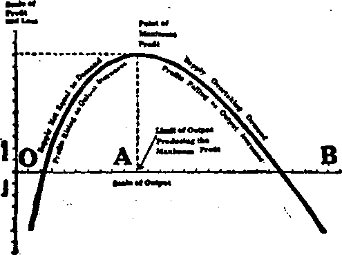
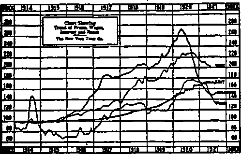

|
f ■ t Not. 9, 1921, VoL m, NaM •SB every after IKS] «eeefc at 34 liyrtto krw VjF Brolly*, If.Y^U. & 4. Tea Ceata a Copy—C.W a Tear Caaada and Tmica Cooatrlea. *B-M |
i. •., _ k • * ’ y* 1 . < «•*•* I . ' ,.j ! 1 > . i ■ ‘ |
—in hit iwvdoba * t*
LAMB ato scosanc*
fOLTTKAX^—DOBE3TIC Aim FtHEKK*
—mw am m wu«__m w— 3w im ■—a wr__■
—c itir du. ■ m Ml___■
■OHB AMD KAUS
nust» AMD PHHOSWSX
mm*mmn ran Til । tw u a Mmia 4naa* Bn»UrM N. T .USA. n TOmiTOBTH. BUDGTNGS nl MASTIN
Tn Cwr» a Con — *2.00 A XlM
nurini onrccs: BHM>k : S4 Crav«M Tutma Ladcmiw Oata. Luxtoa 'T.
2; CoiM^tant 270 DqwIm St. W_ Toroam Omtti; AMtraMataa: IM CoUlm 3U. MflbounK AuatraUk.
MaM ranlruuieaa to na ffoMaa 1A '
• ........ * :
—-'t ■ ' ' r ■
UI Brooklyn, N. T.. Wednesday, November 9, 1921 Number 56 / '
MecMs=sass=ax»sns=9=s==ss:xnsssssss^==9=s=sssK=sssssasssBaES=ss3S? . i • » ■
4
/^NCE upon a time, long centuries, even millenniums ago, it is recorded that humanity had a perfect food.
If they had continued to eat this food they would have lived forever. But in that dawn of the race conditions changed, and for ages man has realized that there was something the matter with what he ate. Select his food as he might, he was slain by what he partook of.
Even in the present age of science—so called —there exists a host of deficiency diseases due to something lacking in the food. It has been well known that there was something health, giving in some kinds of food; and out-reaching minds searched for it, but found nothing more than that some things to eat gave better health than others.
Without this life-giving element in the food-, it was proved by Doctors Weill and Mouriquard, of Paris, there result poor health, weakness, flabby muscles, that tired feeling, spring fever, need of blood purifiers, constipation, or a coarse, rough, leathery, wrinkled, pimply or open-pored skin.
Life in the Food
Thebe is life in the food—some of it. Lack of that life, observes Dr. Hirschberg, in the New York Call, “makes one obese, anemic, emotionally deficient, emaciated, bloated, run down, or ill with signs of rickets, scurvy, pellagra, fever, or beri-beri”. If this element is wanting, there comes a wasting of the bodily tissues. If it is the certain kind of the life-food found in fats, the wasting away is delayed until the fats stored up in the body are exhausted; but afterward there ensue many ills, ending in blindness, lung trouble and death. The eye trouble manifests itself first as a soreness of the eyes, related to xerophthalmia (inflammation of the lining membrane of the eye without discharge), which runs into loss of sight.
Many infants fail to outlive early infancy from marasmus, a wasting disease. Scurvy comes, a disease.of the bones, and other evil symptoms, to those that fail to obtain in their food a certain one of the life-foods. In the Mesopotamia campaign of the British forces during the World War the soldiers in certain sectors suffered from an epidemic of scurvy, which was found to be due to the use of dried fruit, which was deficient in one of the life-giving foods.
If a baby has a hot, bald spot on the back of its head, it is an indication of the on-coming of rickets, a disease due to the lack of one of the life-foods. If the baby is nursing, the disease comes from the mother; for if the food that the mother eats does not contain these life-giving elements, she cannot pass them in the milk to the child.
“Fifteen years ago,” says Dr. E. V. McCollum, of Baltinlore, in the New York World, “the subject of nutrition was considered closed. Chemists had analyzed food stuffs into proteins, carbohydrates, fats and mineral ■alts. Different foods had different energy-giving values, measurable in calories (heat units), and that was all there was to it. In the course of feeding purified foodstuffs to animals, with the object of seeing what differences there might be in different proteins, investigators had the harrowing experience of having all their animals deteriorate, and die promptly. No one knew why, but it was quickly established that ‘purified’ food-stuffs did not agree with animals.”
It was the total lack of the life-elements in the foods that caused the disastrous end to the these experiments. Obviously, foods that would kill animals could not be wholesome for humans —although the advertisements of the “purified” cannery and packing-house foods failed to tell the humans the danger they ran in eating these products of the laboratory.
/ How the Life-foods were Discovered
f T'i8* McCollum, of the Johns Hopkins Medical j i-J School, was one of the first to discover the new element of food. On repeating some of the experiments on the unfortunate animals, Dr.
" McCollum chanced to use some butter fat and milk sugar, in trying whether a more mixed and i palatable diet might not keep alive the creatures doomed to certain death from the "purified” ) foods. His animals lived, and even gained in weight—results so at variance with the experience of the other investigators that they were ; for years a storm center of controversy. Thus : was born a hint of the “vitamines”, to the regu-■ lar medical profession, though some of the na-■' ture healers had practised the principles for ? years.
It also pointed the way to the proper investigation of the subject. Hundreds of nutrition sleuths are hot on the trail of the vitamines— as the life-foods have been termed since 1911. The method of investigation is as follows:
Thousands of rats are bred for the purpose, because the rat comes quickly to maturity, and the effects of the vitamines on the life cycle may be readily observed.
For the test of a given food, two or more rats are experimented on at the same time and under the same conditions. They are each kept in a separate cage so that the amount of food eaten may be definitely known. All the rats in a group are fed with exactly the same quantity of a food known to be entirely lacking in the vitamine in question but otherwise a balanced food.
The other food on which data is desired is selected. One group of rats is fed the non-vitamine food alone, and the other groups are fed each a different amount of the other food, say two grains daily for one group, four grains for another, eight for another, and so on up, a different amount daily for each group.
The group fed no-vitamine food is a teat group. If no-vitamine food is fed to them, after a certain number of days the test group begin to develop sore eyes, and to lose in weight The group getting, say two grains daily of the vita-mine food, are so many days longer in developing the sore eyes and lose in weight, the four-grain group so many days longer, and so on up to the group getting enough of the vitamine food so that they continue indefinitely without developing the adverse symptoms. A certain number of grains daily io found to preserve the health indefinitely. The groups getting more than this minimum have no better health. Thin fixes definitely the precise amount necessary to maintain the health of a rat
To prove that ill health is due to the lack of this particular vitamine, the vitamine food is fed in the ascertained minimum amount to the groups showing ill health, when it quickly brings them back to normal health.
Dr. McCollum keeps up his research work at Johns Hopkins University, Baltimore, where he maintains a rat colony numbering five thousand. These creatures may be rated as among the most valuable inhabitants of the globe today, for the light which their reactions to foods of every variety throws upon the science of nutrition.
Difficult to Isolate
UP TO a year or less ago the best that could be said about the vitamines and their nature and physical or chemical characteristics was that they exist in such small quantities as to defy isolation. The chemists reported that they had not been able to separate the vitamines from other elements of food, even where they are definitely known to exist According to the ‘^Encyclopedia Britannica” the amount of vitamines in wheat is not over ten grains to the ton, or one grain to two hundred pounds, or over three bushels. In limes Dr. Funk says that the vitamines amount to one part vitamines to ten thousand parts of the fruit No one had ever seen a vitamine, any more than one had seen electricity. The effects of each kind were known, and nothing more. The chemical composition was unknown. Prof. Bessnoff reported to the French Academy of Sciences that he had discovered a reagent which colored vegetable juices if they contained vitamines. This was a step forward, because of the possibility of knowing whether foods had in them the life-giving element
Finally Dr. H. B. Cox, of Los Angeles, the inventor of the dry battery, succeeded in isolating the vitamines. He began with yeast and extracted the living, vitamie property, then that of certain fruits and vegetables. He found that the cell of life-principle was the same in all of them. The vitamines themselves were in the form of amber-colored, needle-like crystals. They were also in an amber-colored solution, tasting'like wine mingled with roasted, aimonds and walnuts. Like the remedy “Viavi.” the solation contained also the various mineral salts requisite for the proper maintenance of health. Dr. Cox, whose recent death put an end to a most premising research on the life-giving foods, was greatly interested in making the results of his studies available to the common people. He considered it impossible to alter the eating habits of the people within any reasonable time, and suggested that the proper vitamines be put up as condiments, so that a teaspoonful at a meal might furnish the necessary life-foods for the best health of the people.
Many Theories
UP TO the isolation of the vitamines by Dr.
Cox many theories concerning them were in the field. Some regarded them as “structural compounds of living substances'’; others thought of them as "catalysts”, those queer substances which cause chemical union of other substances without themselves being affected; others believed them to come originally from plants; still others thought that they were always present in natural food-stuffs of the sort that men and animals instinctively consume. Dr. Cox isolated the vitamines, but prior to his sudden death had not clearly defined them.
In 1909, two years before the ascertainment that there must be the substances later called vitamines, Dr. Lindlahr wrote in The Nature Cure Magazine, of the relation of the vitamines to other foods:
"It is vital force, manifesting through the life elements in the plaint, animal or man, which in conjunction with the light, warmth and energy supplied by the sun, elaborates the elements of the earth and air into the ascending form of life and consciousness. In other words, vital force, or the life element is the builder, while sun heat and light are the building material.”
In another article the same writer said:
"Thus we see-how streams of energy, which the sun sends to our earth, are transmuted into chemical energy. Then food is sun energy. The transformation of sunlight into chemical energy takes place in those vegetable cells which contain chlorophyl, that gives the green color to fruits and vegetables. Having studied the transmutation of sun energy into vegetable substance, we understood the meaning of the sentence, Tn plants we eat sun energy’. Without hesitancy we may add to this that in flesh food also we eat sun energy, for the animal body builds itself from vegetable food, without measurable addition of new forma of energy.”
Much more information appears in Dr. Lind-lahr’s booklet, “The True Nature and Sources of Vitamines or Life Elements”. These things were written during a period when the regular medical profession were reducing vitality by poisonous doses and serum injections. The drugless healers were working rather obscurely along the lines which the added discoveries of the last year have proved to be correct.
Vitamines, then, according to the latest information, are found in the leafy parts of vegetables, such as spinach, lettuce and raw cabbage. They exist in seeds, green plants, certain bulbs and fleshy roots, fruits, milk, eggs, and certain organs of the animal body—the heart, kidneys and liver, and somewhat in fats. The seeds include especially beans, nuts and cereal grains. They are also found in yeast. One of the benefits arising from the consumption of the brewed beverages, such as beer, ale and porter, was the taking of the vitamines derived from the yeast, with which the drink was brewed. Many persons formerly accustomed to these beverages do not feel so well as they did before the “dry” amendment became effective. They should seek to get the vitamines in some other way.
Kinda of Vitamines
rPHE vitamines are found to be divided into ■L three general classes, which have been termed "Vitamine A, vitamine B, and vitamine C”, each class having its peculiar function in promoting well-being and growth.
Vitamine A is one which is readily dissolved in fat, and is called “fat-soluble vitamine A”.
Vitamine B is soluble in water, and is called “water-soluble vitamine B”.
Vitamine C is also soluble in water and is called “water-soluble vitamine C”.
The fat-soluble A is obtained chiefly from milk and has remarkable effect on the growth of children, whether of humans or of animals. Babies require a certain amount of it in order to grow to normal size. It also has much effect on the vitality of the sexual organs.
Cows eat the green grass and leaves containing vitamines, and these life-foods appear unchanged and in concentrated potency in the milk and butter. It was a wise law that required milk and ice-cream to contain a minimum of butter fat.
A very small quantity of fat-soluble A suffices to keep people in good, health, and they must have that definite weight of it or suffer ill health. In experiments with rata Professor Thomas B.
DO
Osborne ascertained that a minimum of seven grains of butter fat daily supplied the rats with the requisite amount of fat-soluble A- Less than that produced ill health, and more did not improve the health.
It has been held by some of the early experimenters that heating foods to the boiling temperature seriously impairs or destroys the fat-solnble vitamines. This is not the case with butter fat, which, according to Prof. Osborne, has as much potency after as before the application of heat, provided the heating is not too prolonged. It is now established, says Osborne, "that no serious damage is to be feared by boiling vegetables commonly cooked”. The vitar mines are destroyed, however, by frying.
When the dried leaves of alfalfa, clover, grass, or spinach were soaked in ether, and the ether evaporated, there was left an oily substance. That this was either the fat-soluble A vitamins or a concentrate of it, appeared when minute quantities were administered daily to rats suffering from lack of the fat-soluble A, and the rats made a speedy recovery. Only five percent of the dried leaves of alfalfa, clover, bay, or spinach in the food of cattle supplied enough fat-soluble A for continued health. In the rat colony one and a half grains daily of the dried leaves of alfalfa, clover, grass, or spinach supplied an ample amount of fat-soluble A to keep the rats well; for at the end of a year, when butter fat was added, there was no improvement in the condition of the groups under this test. These dried leaves have much more fat-soluble A, weight for weight, than has butter fat It is probable that in a short time preparations of alfalfa, which is particularly rich in fat-soluble A, will appear for human food, as an effectual substitute for the more expensive butter, provided the alfalfa can be made readily digestible without so heating it as to destroy or impair the vitamines.
Among other vegetables it is found that the white potato contains practically no fat-soluble vitamine, but the sweet potato by comparison is rich in it There is very little in rutabagas, dasheens, red beets, sugar beets, parsnips or mangels.
One of Mr. Osborne’s studies with the fatsoluble A in vegetables was conducted by feeding his groups of rats one and a half grains daily of dried cabbage leaves. This demonstrated a considerable lack of the fat-soluble A
ru GOLDEN AGE
Baooxvnr, w. t in the white of the cabbage leaves; for this group of rats failed thirty days after the test group had failed which had no fat-soluble A at ** all Both groups promptly recovered their health on being fed one and a half grains of butter fat daily.
The experiments with dried canned tomatoes * showed that one and a half grains daily contained as much fat-soluble A as the same weight of butter fat The tomato is one of the most valuable food products in existence, because it contains in large amounts not only fat-soluble A but both of the water-solubles B and C. It was also proved that dried carrots had as much fat-soluble A as the dried tomato.
A recent study of rickets indicates that the disease is due to a lack of calcium salts, of the fat-soluble A vitamine, and of protein. Poor tooth development and decaying teeth are now associated with a deficiency of the fat-soluble A in childhood.
One of the benefits of the World War was its proof that without fats health cannot be maintained. In Germany, when most of the fats were seized for military purposes tuberculosis cases soon rose into a veritable plague, as they did in France and other countries where the fats were employed, not to save life, but to destroy it. Such lessons are too expensive to be repeated often, but from the dietary viewpoint they serve a purpose as demonstrations of the necessity of the fat-soluble A in the food of the people.
Water-Soluble Vitaminee
VITAMINE B is a water-soluble vitamine from green vegetables. It has much to do with the growth of young animals. It is absolutely necessary in order to obtain growth from food. A baby may be at present fat, chubby and laughing, and yet, from a lack of the water-soluble B and the fat-soluble A in its food, be on the way shortly to develope anemia, rickets, or other of the distressing disorders arising from lack of A; or its growth may inexplio- _ ably be suddenly retarded because it is not \ getting enough of the water-soluble B.
It has been proved that milk, as it comes from the cow, contains both kinds of vitamines—the fat-soluble A; the water-soluble B, indispensable for the growth and welfare especially of the young; and the water-soluble C, without which life itself cannot exist.
■svaasaa ». 1M1
When milk stands for a few hours, the light batter fats rise to the top in the cream. The eream and the top milk just below it contain an excess of fat-soluble A and not enough of the water-soluble vitamines.' The skim milk below the top milk and cream has too little A and too much water-soluble B and C. In order to give the baby “the very best” it is quite customary to draw off the top milk and dilute it with water. The ordinary diluted top milk creates endless trouble when the unfortunate infant reaches the point of time—a certain number of days, or weeks — at which the lack of the water-soluble B and C becomes manifest. Then appear the impaired appetite and a rundown and ailing concRtion. In Denmark, through the feeding of infants on diluted milk during the war—for butter was shipped into Germany at high prices — innumerable infants developed sore eyes and scurvy-like symptoms, precisely the same as the rat colonies did under similar food tests. The whole of the milk, secured by shaking the cream and the skim milk together, makes the best food for babies. Milk is rich in vitamines because the food of the cow is rich in them, and they are passed on into the milk. The value of the milk depends on its vitamines; and the more of the life-foods the cows are fed, such as alfalfa and clover, bran and middlings, the better off will be the babies and other users of milk.
Water-soluble vitamine C keeps people and animals in good health. It maintains the tissues in a healthy condition, and wards off such diseases as scurvy, which manifests itself by blotches of blood under the skin, by spongy, swollen, bleeding gums, bowels, etc., and by great languor and often by rheumatic pains. In the Latin language scurvy is called “scorbutus", and hence the name “anti-scorbutic”— against scurvy—is given to the water-soluble C vitamine.
The antiscorbutic vitamine C is found in oranges, grapefruit^ lemons and other citrus fruits, and in fresh vegetables such as tomatoes, spinach, and lettuce, and in eggs and raw milk.
Among other fruits, the lime has much vitamine C. Apples and pears have a fraction of what the orange has. The banana has practically none. Experiments are in process to test grape juice and grape fruit thoroughly. Old-fashioned molasses, such as was made before the sugar trust ruined the vitaminic content of molasses
71 and syriqi, had a water-soluble vitamine content perhaps as large as the orange, or even more concentrated. It is not obtainable now, in its } place being the injurious molasses and syrup made from cane and corn by processes which quite thoroughly devitalize them. Wall Street spoils everything it touches. '
Orange Juice
ORANGE Juice Considered in a New Light” was the title of an article in the Journal of the American Medical Association, which shows that some of the drug doctors are being waked up to the prime importance of the life-giving factor in health.
It took the baby-doctors—the "pediatricians” as they are known, to "wake ’em up”. Not all are roused yet; for it would be a long time— perhaps several centuries — before the vested interests which have their millions invested in drug and serum factories, could appreciate the fact that the common people are not going to wait for Wall Street permission to get well. Extracts from the article follow:
“It is recognized by pediatricians that artificially fed infants thrive better if they receive some addition to cow’s milk, particularly when the latter ia pasteurized or sterilized [vitamine-killing processes].
"For this purpose orange juice has attained a well-deserved popularity. Other fruit juices have likewise been used with success as antiscorbutics [anti-scurvy] ; and latterly the juices from certain vegetables have been demonstrated to have a similarly beneficial influence in the dietary of the young.
'"The use of the tomato, first urged by A F. Hess, of New York, has been particularly promising, owing to the fact that, in contrast with some other antiscorbutics, this readily available vegetable can be dried or canned without losing its potency in antiscorbutic vitamin, and it can be administered efficiently in various ways, including intravenous injection of the juice.
“As Osborne and Mendel have remarked, the newer studies, indicating the richness of many types of plant tissues in those nutritive properties termed vitamin, place the dietary importance of the green vegetables in an entirely new light. It emphasizes their use to supplement the refined foods of the modern food industry, which furnish products rich in proteins, fats and carbohydrates, but in many cases comparatively deficient in the vitamin.
"Byfield and Daniels, of the University of Iowa, have noted that in every case when the antiscorbutic dose of orange juice—fifteen cubic centimeters—was increased to forty-five cubic centimeters a day to infants whose weight had remained stationary for a number st days, there was a marked stimulation in growth. -
"Relatively large quantities of milk are rujtiired to produce the increased intake of fdod and improved rate of growth, which arc readily secured by very small quantities of many green vegetables.9
Eugene Christian has worked on these lines for years in advising fruit and raw-vegetable juices.
Hr. Osborns’* Tests
IN THE tests made by Mr. Osborne and reported in the .Rural New Yorker, the relative values of the water-soluble vitamines in alfalfa, clover, timothy, cabbage, spinach, and turnips were demonstrated. The highest percentage of vitamines was found in alfalfa and clover. The others showed not over half as much. The green part of the cabbage leaf was used; for the white part, being shielded from the sunlight, is almost lacking in the water-soluble vitamines: Evidently the light of the sun has everything to do with the production of vitamines in the cells of most plants, a further bit of evidence that the source of the power to maintain the life once created resides in the sun.
- A comparative test of dried tomatoes with dried cabbage, turnip, carrot, and beets showed the high value of the tomato as regards water-soluble vitamines. The cabbage, turnip, and carrot, comparatively, were of slight value, while the beet was almost worthless from the vitanrinic viewpoint Neither the skin nor the inside of the potato was found te contain the vitamines in appreciable quantities. Rutabagas and dasheens were twice as valuable for water-soluble vitamines as sweet potatoes, while- as compared with any of these the sugar beet and mangel stand very low.
A decoction of orange peel is reported to be about as useful, vita mini'■ally speaking, as the orange juice itself in furuislung protection against disease.
Orange and lemon juice are twice as rich in water-soluble vitamines as whole milk. An orange ectea in the middle of the morning and another in the middle of the afternoon will supply vitamines at the time when they pass most quickly and directly into the system and produce the maximum effect in improving health and vitality. Nd better use can be made of money than for these two oranges a day. The presence of the life-giving juices also probably stimulates mi tones up the stomach and perhaps the entire digestive tract At any rate they clear the complexion, correct a tendency to pimples or boils, impart an unwonted vigor, and while undoubtedly prolonging life, make it more worth while. If fruit itself is not convenient, the orange crush and Umon crush, or the orange drinks made directly on the spot from oranges, are obviously as good as the fruit itself. Drinks bearing the name “orange”, however, bnt having a chemical taste, should be avoided as poison, as they are made from chemicals, obtained it is asserted in part at least from coal tar. During the morning dr the afternoon or at the noon hour, when one is feeling "all in”, one will now stop for a “nip”, not at the saloon bar, nor at the more or less secret “hole in the wall”, but at one of the genuine orange-fruit drink counters. There he obtains something with the punch of real vitality; for he is assimilating one of the life-foods.
Beri-Beri and Rice
TJERI-BERI is an exceedingly painful disease -*-* of the nervous system. In pigeons which have been experimented on it is called polyneuritis— inflammation of many nerves. The native Singhalese name beri-beri signifies "very bad sickness”. It is a disease of the nerve ends, and is characterized by partial paralysis, swelling of the limbs and general dropsy. It frequently terminates in death after agonizing suffering.
This disease was variously attributed by physicians to germs, poverty, and other causes; but that it was an under-nutrition trouble was manifest when it was found that it was cured by vitaminic foods. The uncivilized natives, like the civilized Americans, liked to have their food “nice and white”, so they polished the rice down to the familiar whiteness of the common article today. The vitamines, however, are in the white, yellow, red or black coverings of the rice grain. These were—and are still in America—carefully removed by the miller in order to make the rice look pure as the driven snow; and he ended in making it about as nutritious as snow—to the disaster of humanity both civilized and uncivilized When patients suffering from beri-beri were merely fed the refuse of the polished rice, they promptly got well without medicine. Pigeons and rats on the verge of demise from this disease were made well in a few days by feeding them the husks and polycarp of the rice, which had been previously fed to the hogs. Thus has Big Business, oriental and occidental, ruined the good food and impaired the health of millions of Orientals, who on the white-rice diet never knew a well day, and measurably of such Americans as make rice an important portion of their diet. On the other hand the possible market for rice and rice products is not nearly what it might be, if the American people did not have the well-founded feeling that somehow rice is not good food. White rice does not have a taste which can be relished. This is owing to the lack of vifamines, for all vitamine foods can be eaten with a relish. To sell polished rice should be made as much an offense against the law as it is against good health.
Tn the Philippines, since the American occupation, the new government compelled the change from polished to unpolished rice. This 'practically stamped out beri-beri. If the Ameri-ean Government can stamp out the sale of milled rice and give wholesome food to the Philippine natives, what reason is there why the American people in the United States itself are not worth some protection from “the enemy within”? The sole reason is the rice-milling combination, which piles up wealth from the disease-producing food which they sell to poison both adults and children.
Feast and Vitamine*
NOT a little is said in magazines and newspapers, both in the news and in the editorial columns, on ths virtues of yeast as a vitamine food. Yeast is rich in both the fatsoluble and the water-soluble vitamines. Much of what is said is doubtless exaggerated with the characteristic disregard for the whole truth displayed by advertising men, but there is at least some benefit from the consumption of yeast
According to the Fleishmann Company, which is conducting a publicity campaign to promote the sale of its yeast, the vitamine content of yeast is four times that of spinach, which, as heretofore shown, gives it a vitamine value about that of dried alfalfa, which in turn ia about that of orange juice. The yeast is eaten in cakes, spread on bread, or, if it forms gaa, dissolved in hot water.
Ona of the vitamine investigators says that “a scrawny, lethargic animal, rapidly dwindling in sine, with unsleek eoat and evident malnutrition, will completely change its appearance and responses in a few days on a dtet unchanged except for a tiny bit of yeast”. Dr. Philip B. Hawk, of the Jefferson Medical College, has made exhaustive tests of the yeast treatment, and says: “In many of the cases which earns under our observation, the yeast treatment caused an improvement in the general physical condition of the patient quite unassociated with improvement of the symptoms associated with particular diseases in question”. The claim is made that through its stimulating and lifegiving vitamines yeast furnishes a large quantity of the needed vitamines, which stimulate the appetite, assist in the digestion of the increased food which the stimulated appetite demands, and help the body get rid of the waste matter, thus aiding in curing that arch-enemy of health, constipation, with its long train of other disorders. However, it is reported to cause an irritation of the digestive system. Dr.
berg in the New York Cail advises to “take tablets of yeast of the types having much vitamines. With the power and improvement which go with sunlight and an outdoor life, numerous discomforts blamed upon almost everything but the right thing, will disappear as the mist of the valley before the sunrise.*
In Mr. Osborne’s experiments young rats fed without water-soluble vitamines for thirty days, very weak, ill and with sore eyes, were given some extract of yeast. They were promptly running t-bout their cages and eating twice as much as before, and in twelve days were in the lively condition of a normal rat
Yeast is reported to contain more of the water-soluble vitamines than any other substance, and in many cases much benefit results at first from its use, but as in all things the results are not uniform.
Concerning the benefits of yeast, Mrs. Kate O'Hara, says in her weekly National Rip Sato:
“There ean be no doubt but that the Reishmaxm Yeast Company had seized upon a psychological moment to recommend yeast cakes tor ’scrawny, lethargic animals rapidly dwindling in size, with nnaleek coats'.
“Not only eoats, but also tronaers, aod.cther wearing appard.
“Eapidly spreading unemployment has a tendency to assist the H. C. L. along this line.
"A tow cents’ worth of Fktohmann’e yeast, regularly token, soon •vereomas the trouble.
“Eat enough yeast eakea; and yon soon swell up, and feel fine, and look pnaperou -
“Of course, and it drnuld be duly appreciated, th* yeast prescription tor nm-down people ia rwptrislijr adapted to th* poor. Hey lack what the nutrition experts term ‘vitamine’. Their meals'an not sufficiently composed df the nutritious and strengthening dementi. The poor are prone to dine on poor food.
"And yeast cakes an cheap! People that cannot afford plenty of rich milk, real butter, sirloin steaks, and such like foods, can st least span a nickel for a ttttie yeast. You can carry a caka or two in your pocket, and lunch on it when you fed any weakness through lack ci good nourishment, coming over you. It’s another f blessing that society oflm its scrawny animals.”
A pioneer in a line of confectionery, which may come into fashion,' is the Knickerbocker Chocolate Company of New York, which markets sweet chocolate concerning which it says: “This sweet chocolate has added to it the mineral salts and vitamines A, B, and C, extracted from a vegetable which contains these elements so essential to health”. The vegetable may be __ yeast. Many others will follow this lead until the vitamine idea is firmly imbedded in the public mind, after which will flow benefits consequent upon the more general attention to this - important and indispensable element of good food.
Some Vitamine Experiments
AMONG the authorities on vitamines is Dr.
. Ross A. Gortner, of the University of Minnesota. One of his assistants says in the Omaha Bee something of value about experiments made by Dr. Gortner:
“Ordinary pasteurised milk is lacking in vitamines, and babies get scurvy from drinking it. If milk is boiled slowly, the vitamine content is destroyed; but if it is boiled rapidly, the vitamine content is not seriously affected.
“T« one of ti>e experiments pigeons were fed with polished rice, a chemically pure food. They became nervous, and finally died, following a nervous attack which lasted ordinarily about a minute. But if they were permitted to eat a small portion of green foods containing vitamines, or a little milk, they became normal within half an hour.
“Two batches of hogs from the same litter were used hl another experiment. Ono was fed only on corn, the other on corn and powdered milk. The hogs on the powdered milk diet wen nearly ready for market The others had failed to gain in weight for several weeks. They wen starving for want of vitamines.
“If your children an bow-legged, feed them cod-liver oil. This contains an anti-rickets vitamine which is very beneficial to the condition. One of the professors at the University declared he could cure every case of rickets in St Paul and Minneapolis for $5,000—spent for cod-liver oil.” '
Pellagra, a disease prevalent throughout much of the South, was until very recently considered a disease due to germs or bacteria in spoiled corn. Pellagra had occurred in about half a million known cases, and is about as dangerous as typhoid, the death rate being ten percent, compared with typhoid's eleven percent
Through the research into the disorder by Dr. J. L. Goldberger, of the United States Public Health Service, the fact was disclosed that the combination of causes of pellagra was a lack of vitamines, and deficiency in the “animo-acid content of the proteins”, and of the mineral salts. Thus the dreaded pellagra is proved to be merely a malnutrition disease, resulting, not so much from a poor diet as from an unbalanced diet. Many of the unfortunates had been eating plentifully before, but living on “pork and pone cake”, or other combinations which lacked the requisite vitamines and minerals. Milk, fruit, and meat added to the food of the pellagra cases caused an almost magical disappearance of the disorder. ’
Dr. Goldberg demonstrated the new diet-deficiency theory when a squad of convicts voluntarily submitted to a deficient diet of rice, corn bread, grits, biscuits, gravy, and syrup, with no vegetables, milk, meat, or fruit They first developed pellagra, and then got over it when fed the missing vegetables, milk, meat and frnit. .
Dr. Frank Crane sums up the value of the vitamines in these words:
“The tomato and the orange help to keep other foods from making us sick. The vitamines should be taken freely along with any rich diet of fat-forming food, in order that such food may be made to give the body its full value. They also help to maintain the reserve alkalinity of the blood.”
Dr. Woods Hutchinson has said in The Ladies' Home Journal that the vitamines are to the body what the electric spark is to the gas engine. There may be plenty of proteins and carbohydrates in the food, just as there may be plenty of gasoline in the engine; but without the stimulating spark of electricity in the engine or the vital spark of vitamines, the mechanism does not go. It is probable also that the presence of water-soluble vitamines in food stimulates the oxydizing process of the cells of the body, resulting in a higher degree of that chemical activity which is a manifestation of life power.
There are a few good wdrks on vitamines. Ammig them are: “Vitaminea: Essential Food .Factors,” by Van Buren Thome, M. D., E. P. Dutton & Company, publishers, New York; “The American Home Diet,” by Dr. E. V. McCollum, Johns Hopkins Medical School, Baltimore, Md.; and the work byDr.Lindlahr,of Chicago, already mentioned.
JFhp the Scarcity of Vitamines T THE answer to the question, "Why the lack J. of vitamines!” is—Civilization!
Civilization, for the ultimate benefit of the rich and the doctors, takes wholesome wheat, mills away the outer layers containing the vita-mines, feeds the life-giving part to hogs and cattle, and feeds human beings a refuse with as much vitality as plaster of paris. The nutritious part is cast out as worthless, and the diseaseproducing portion is extolled by the members of the powers that be. Those that should lead the people to life lead them for gain unto death. Black is made white. White is made black.
There is money in the food business. The food trusts can food in such a way as to destroy or impair its vitamine content. People living on canned goods usually show signs of lack of lifefood. Canned soups are especially lacking in the vitamines, as are condensed and evaporated milk. Vitamines are usually lacking in canned meat and canned fish. Preserved delicatessen foods as a rule are deficient in the life-giving elements. If it is necessary to depend on such foods, as is often the case in cities, the vitamines may be made up by eating with the food something fresh and green, and an orange or two between meals. Yeast also will supply the watersolubles B and C and the fat-soluble A; and all the vitamines can be obtained in real butter and fresh whole milk, or in the cheese made from sour milk.
No greater crime against the people could be committed than that of the milk profiteers, who plan to take the cream and top milk off to sell it at a high profit, and substitute a chemical compound of vegetable oils emulsified to look like cream. It would rob the youngest of what is essential to their growth and their health, and if permitted by law, would produce a generation of ailing, weak, under-vitalized persons, un-of the great cities of Civilization, especially in Great Britain, where the so-called “Hooligans”, -the grown-up children of the slums, are regarded as a menace to civilization, not least of all because of their proneness toward a shiftless lawlessness, bordering on anarchy, and attribs-' table to a weakened and impoverished intellect It was discovered in war-time that the good food and regular outdoor life of the army made these men over measurably. A generation or two of proper feeding would revitalize this race • -of unfortunates. England must soon find a way - : to revise her civilization, and feed the people their vitamines, or be in danger of being swallowed up by these degenerates. So must Germany, France, and so must America, where unemployment and undernutrition are liable to become chronic for hundreds of thousands and start them in the steps of the London Hooligans. * It is all for the pound in Britain and all for the dollar in America—these are words pregnant with national death.
healthy, unable to resist disease, inefficient, unemployable, and generally unfit for life's tasks. • vaccines, which tend to pollute the blood stream Such a race has already been produced in some and diminish vitality, when the real way to
“Ill fares the land, to haStming ills a prey, Where wealth accumulates, and men decay 1” One of the next steps in a so-called "Christian” civilization ruled, not by the law of Christ, but by a pagan law of unmodified supply and demand, is that the publicity given by the press and by advertisements is destined to increase the demand for vitamine foods. Soon should appear the workings of the relationship between price, demand, and supply. The prices of oranges will soar, and with’them yeast, lemons, alfalfa, clover, butter, milk, and the other products of farm and orchard, to which can be tacked the fancy-sounding term “vitamine”. It is an unusual opportunity to capitalize an in-crease in knowledge, and to exploit the reading classes that learn something about life-giving foods.
The Docton* Responsibility
DOCTORS are presumed by the laity to be devoted to the maintenance and improvement of the health and vitality of the people^ They have done much, but whether this conception is wholly correct or not may be settled by consideration of the fact that the most prominent regular doctors are almost wholly given over to the study of poisonous drugs and their effects and to the more poisonous serums and health undoubtedly lies in the purifying and vitalizing of the blood and in the field of dietetics.
If the doctors desire to regain the confidence of the laky, let them cease from trying by law, by policemen, by fines and by imprisonments, to compel a reluctant populace to submit themselves to their anti-vitality methods. Let them turn to the life-giving factors and show the people how te secure life and how to have it more abundantly.
But what can be expected of a profession whose greatest institutions, leaders, and press are dominated by wealthy and powerful medical associations, which themselves are under the thumb of the medicine, drug, and surgical-instrument trust! In plain words, let the doctors break away from Wall Street, and let them cease the commercializing of the healing art
The responsibility is not small. One of the causes ef the lack of interest in the life-giving foods, of the prevalence of disease and death from improper food, and of the general indifference of the people on the subject, is the attitude of reactionary drug doctors toward foods as remedial agents. A physician who taught all his patients the importance of avoiding certain unwholesome foods, and who was right, was the butt of the local medical profession. Dr. Tilden of Denver, who for years has preached the merits of certain foods and food combinations, was constantly the target of the profession. The drugless doctors, in spite of the shining light of their remarkable success and of the vitamine discoveries, still have to fight for their lives against oppressive legislation intended to put them out of business or to subject them to the state medical boards of the regular doctors. Today there are dregless healers in prison—put there by regular doctors for daring to heal the people "another way". What osteopath, chiropractor, neuropath, hydropath, or other drugless healer, has not felt the dagger of the organized, commercialized medical profession! Even the vitamines are liable to be taken over by the profiteers of the profession, organized and cornered in great factories, under medical association laws so framed as to prevent the manufacture of vitamine products by any but the medical trust. All in the name of law and order and for the “good" of the people! But these forms of organized selfishness are destined soon to disappear forever in the new spirit of the Golden Age—and sighing and pain, drugs and poisons, serums and vaccines, shall flee away with the darkness to which they belong.
The Neglected "Ash’ '
OW much of the blame for universal bad feeding habits of “civilized” peoples rests
on the shoulders of some of the medical profession will be better understood later on. Improperly taught doctors have always, from the dark age when they chanted incantations and dosed with filthy and bitter decoctions, been learned indeed in death-dealing poisons—drugs —but densely ignorant concerning the life-giving factors of food and diet. This is suggested in a paragraph from Alfred McCann's work, “The Famishing World,” in the fact that the “ash” which the doctors neglected contained the most valuable elements of the food:
“Prior to 1912 the only thing the public ever heard of in connection with a description of food was the academic division made by dieticians — three groups, carbohydrates, proteins, and fats. There was another division to which some of them on rare occasions glur-ringly referred. They called this fourth division 'aah^ The division of 'ash' was always exasperatingly ignored and apparently had little if any meaning for dieticians and was not considered by them as significant or important.”
Yet the “ash” contained some of the secrets of health and of Efe. Blind guides! Blinder people!
For many decades this “ash”—composed of the various minerals essential to health—was employed with marked success for healing purposes in the Schuessler tissue remedies, the Via-vi treatment, the Ensign remedies, and others. It saved countless persons from disease and death—and was laughed at by regular doctors. Now some of them are compelled by “discoveries” by their own number to see these things. To quote Edith S. Taussig, in an interview with Dr. McCollum, of Baltimore, in the New York World:
"The science of nutrition is an important branch of preventive medicine. Thu discovery that disease is at times due to a lack of something in the organism instead of something intruding upon it—a poison, parasite, or germ—opens up a new field of medical scientific thought”
This “new” field itf the now old principle on which tissue remedies and like remedial agents
have maHa a long and large roeord of success.
The tardiness of some leaden in the medical profession in following up leads which are really good for the common people—especially if the leads are supplied by non-members of the profession — isdiscuasedin Philosophy of Health:
“Vitamins ia furnishing the mystic shrine of the medical mind food for scientific investigation end experimentation. It has found the mouse-and-polished-rice story a head-liner for quite a while. But just in the nick of time, as the mouse-rice story ia beginning to p*11! for tack of medical vision to make a general application of the knowledge, a little, obscure laboratory, in an obscure little city, has found that if mice are fed lettuce and spinach with polished rice, acidemia will not follow the eating of rice. Good! That’s only two decades behind the old Stuffed Club readers, who knew twenty yean ago that eating salad with the dinners prevented fermentation of starch during the digestive act;, or, more to the point, the salads prevent bacterial propagation during the digestive act, whm the potency of the digestive enzyme [digestive substances exciting chemical action]—the natural enemy of microbes—is reduced.”
-."Man's organism has the function of preparing all the enzyme for digestive and defensive needs, and will do so, if given the necessary food. Of course, this power is reduced by any of the influences which enervate the system. Proper food ia not the only thing necessary; there must be power to digest and aarimi-late, and to extract from the food, vitamin* for controlling bacterial fermentation, which ia simple acidemia [acid blood] as long as no animal food ia taken, but which, when animal food is eaten, is followed by putrescence, with such septic [poisoning] diseases as pyorrhea, diphtheria, etc.”
The doctors should realize that there is something to learn from other people than the Rockefeller Institute—from some that do not write *M. D.** after their name, some of whom the profession still puts into prison. For medicine is something like theology—it originated in the dark ages, and much of it is out of date; and it needs new blood and the new ideas which are destined to prevail and to bring to naught the wisdom of the wise. The laity already see that much of medical wisdom is foolishness and, in spite of medical-association attempts at repression, are flocking over to men who, for instance like the osteopaths, cured all but one of one hundred and fifty of Spanish influenza, while the regular doctors let . die one out of seven. The common people want to be among the millions now living that will never die, and lees and less are they taking their chances with the commercialized and profiteering drug doctors and surgeons
If the medical associations wish to stand in : a better light before the people, let them secure the passage of laws striking at the root of the ill-health of millions—laws forbidding the refining of flour, the polishing of rice; and the preparation and sale, in interstate commerce and within the states, of foods devoid of the . proper vitamine content They have successfully imposed laws restricting the minimum of _, butter fat in milk and ice-cream. In doing this * they, faced merely the American farmer, isolated and unorganized. Let these powerful associations try to compel a minimum content of ' vitamine in foods offered for sale, and a general enhancement of the quality of food sold. If they prove able to do some such good for the people in the face of the embattled food-trusts, they will overcome an enemy worthy of their steel
A desirable effect of legislation to regulate the manufacture and interstate sale of nonvitamine food products, such as refined flour, will be the enhanced health of all the people, from babies up. Another will be the scrapping of much of the costly machinery of the milling trust, by which it effects a monopoly of the flour business. When it is no longer necessary to use such expensive machinery to make flour, the good old-fashioned day will return when every city and village will have its miller grind- . ing out healthful food for the people, at a moderate price. It is estimated that more people are slain annually by the disease-producing foods of the various food manufacturers than were killed in the whole World War. “Patent” flour, as’the refined white flour is termed, is made of the part of the wheat-berry which contains almost none of either the fat-soluble or' the water-soluble vitamines; and to live on it exclusively for ninety days would practically be a death sentence. Is it any more murderous for a thug to strike a man down with a black-jack than for a Minneapolis bauker-miHer to strike down millions with death-dealing food—poisonous because bereft of its life-giving vitamines! Owing to the meddling of the financiers with the nation’s food, hogs get better food than humans.
Another effect of the existing erase for white flour is that it impoverishes the farmers that ridae the wheat The wheat as cold by. the
farmer to the elevator companies, taking North Dakota as a basis, is divided into six grades— “No. 1 Northern, No. 2, No. 3, No. 4, No grade, ' and Rejected”. A difference of some twenty cents a bushel prevails between the most popular and the least popular grade. While there ia a marked difference in price, there is no difference in milling value or in the nutritive quality of the flour. The difference is that the ‘‘No. 1” wheat makes up into a whiter flour, and that the same quantity of wheat swells up into a larger loaf than the lower grades. At only ten cents a bushel loss the total loss to the farmers on the average wheat crop is over $50,000,000.
According to Judge Andrew A. Bruce's book, "Non-Partisan League”:
“Prof. Ladd, president of the North Dakota Agricultural College, and one of the most eminent chemists and scientists of the United States, and well known ■nd his ability recognized in foreign nations, has demonstrated scientifically that the poorer grades of wheat are substantially of just as good milling value and produce flour equally of as high a grade as that of the highest grade, and he concludes that the fair and equitable method of marketing wheat is to base the price thereof on the milling value thereof.”
To insist on flour containing the vitamines of the wheat would eliminate the grading of wheat and enrich the farmer.
Efficiency Food
MUCH greater economy in the cost and quantity of food is possible when the vita-mines are present than when they are inadequate; for the person is satisfied with less and gets more out of food with vitamines than without. Sickness diminishes the working efficiency of the nation by a third. Ailments come on and prevail when die body experiences a shortage of vitamines. In the large view, the importance ia manifest of the people's having sufficient vita-mines in their food; for the diminishing of sickness, and the enhancement of efficiency with dearer thinking from healthier brains and bodies, will add enormously to the prosperity of the nation. Whatever country first devotes itself to seeing that the populace gets food with all the vitamines requisite for health, will speedily outstrip the rest of the world in every respect, no matter from what plane of well-being they may start.
The food itself may be made more efficient. Fruits and grain raised on different soils, and looking precisely alike, may differ widely in the mineral and life-giving contents— the despised “ash” of the dieticians. If the mineral content can be increased, the value of the product is enhanced.
A forward step in this direction has been taken. In the noteworthy work which Dr. Lindlahr is doing, one of the first problems was how to secure a richer food with which to build up better bodies. One of the first steps for the betterment of his patients was to increase the mineral richness of their food. The example of certain progressive sections of Europe was followed, where by the addition of pulverized lava, lime, and phosphate rocks, the crops had been doubled and trebled in quantity, and the mineral content of the grains, vegetables and fruits likewise increased. The soil of the Lindlahr farm was saturated with wpod-ash, sifted coalash, pulverized lime rock, phosphate rock, iron filings and a little ground rock-salt
“The effect of this continued, systematic, mineral fertilization on the products of our gardens,” says Dr. Lindlahr, “has been little short of marvelous. Every season our vegetable gardens, on land formerly supposed to be completely exhausted, excite the admiration of those who have the pleasure of seeing them.”
By this mineralizing of the soil the mineral salts are added to the food, and impart more vitality, vigor, and vitamines to the patients. This is a hint of how the vitamine and mineral content of the food will be increased generally in the better age about to dawn. The everlasting life of the people who are never going to die will depend in no small degree on the quality of the food which they consume. That everlasting human life is not unattainable appears from the many statements by physicians that the body is capable of indefinite self-repair, if the problem of complete elimination of harmful substances can be solved. That can be accomplished through proper food.
Balanced Food
BALANCED food has long been known to require fats, oils, proteins, starches, sugar, and minerals. It was discovered in 1911 by Prof. Funk, of New York, that other food elements were necessary which he called vitamines. Food was then measured by calories as it is today for example on the mend of the Childs' restaurants. But the calories do not help growth, repair, or resistance to and conquest of disease, which the vitamines accomplish. .
annw a loss
Too much protein and starchy food, such as fish, meat, potatoes, oatmeal, gravies, pastries, and cake bring on the effects of a lack of vita-mines. According to Doctors Weill and Mouri-quard, of Paris, there should be added to the diet plenty of fruits or juices of freshly picked lemon, orange, berries, bananas, or fresh yeast, butter, cream, milk or cottage cheese. These will go far toward curing those suffering from lost appetite, stomach troubles, troubles in joints or muscles, feeling out of sorts, or constipation. Anyone that wishes to strengthen his powers of resistance against pneumonia, colds, typhoid, or hundreds of other germs and bacteria waiting to wage war within his system, should take care that the various vitamines are not wanting from his food. With the vitamines one can laugh at disease. Only a small amount of the vitamines are required, but a certain weight daily is essential to the normal growth of the child or the sustained health of the adult.
All this has been proved in the experiments on animal^ for the bodily cell is much the same in animals as in men.
*It has been found,” says Philosophy of Health, "that mice thrive on polished rice, lettuce and spinach. Science ia catching up with our book "Toxemia’. We have been insisting for more than twenty yean that bread and meat should not be eaten together, aa they excite opposing digestive secretions, and where full meals— over-eating—are indulged in, toxemia [poisoning of the Hood] must follow; leas will follow if half the meals consist of a combination salad, or fresh, uncooked fruits; end no acidemia [acid blood] will follow whole-wheat or rye bread, or any of the cereals or starches, when eaten within systemic needs, with salad or fruit; nor will toxemia or acidosis fallow meet, salad and cooked vegetables when digestive needs are respected at all”
One of the noteworthy eastern apostles of this system of health maintenance is Dr. C. A. Heintze of Camden, N. J.
Not mariy works have yet appeared telling in practical words just what to eat meal after meal in order to obtain the proper vitamines. Probably the best is “The American Home Diet”, by Dr. E. V. McCollum, already mentioned. Dr. Heintze also has a valuable book on the same subject.
In due time, as the matter is more exhaustively looked into, and the results are published, a new and life-giving healing art will arise. There will be new mends for the day’s eating, and new cook-books, presenting the facts, not merely concerning calories, proteids, fats and carbo-
n
hydrates, but shout the vitamins content of the food to be eaten. Evelyn Grayson in the New York World, recently gave a hint of what is coming in a suggested breakfast vitamine mend: vmxui >ooi>
Antiscorbutic_____________Orange
Fat-soluble A '
Water-soluble B
Antiscorbutic with sugar and milk
Fat-soluble A eggs
Fat-soluble A------------Butter or buttered toast
Fat-soluble A Coffee with cream
According to Dr. McCollum in the World, the tests that prove a diet or a food to be healthpreserving are:
“It must not only enable young animals to grow to maturity; it must enable them to reach the vigor and fertility ideal far their species; they must live out their normal life-span; they must bring up their young; and the young in turn and on the same diet, must attain the same standards of health as their parents, raise their young, and so on for four generations at least”
By means of experiments on the lower animals the ideal food, and finally the perfect food for humanity, is laboriously and scientifically sought In due time, when the super-brilliant intellects of the incoming Golden Age apply themselves to this matter,' the problems of health and of life itself will yield. They will no longer defy the scrutiny of man, but will be solved. After the curse on man is lifted, the perfect food will be worked out, and the words of the Master be fulfilled: T am come that ye might have life, and that ye might have it more abundantly*.—John 10:10.
The Latest Information .
THEBE is perhaps no better summary of the state of progress in knowledge of the vitamines from the chemical viewpoint than what was written by Alfred A. McCann, and published in the New York Globe for October 13, 1921, from which we quote in part:
“A whole pound of dry yeast contains less than a fraction of a milligram of B vitamine.
‘This quantity is so small that it is just large enough to think about, but not large enough to measure. The first attempts to separate this almost unthinkable quantity of B vitamine from a mass of inactive material were almost as daring aa the voyage of Columbus into the vast unknown. The first separation was effected by an * extraction with alcohol- If then were any B vitamines around it was thought that they surely would be taken up by the alcohol to the form of an alcoholic solution.
“The next thing to do wee to' get them out of the alcohol. Obvieualy precipitation was the only way at hand. So they precipitated whatever there might be in the solution that could be precipitated by treating the liquor with phosphotungstic acid, and tannic acid, and fuller’s earth, and bismuth potassium iodide.
"The poor vitamine hunters got nothing for their pains except the knowledge that if there were any B vitamines present, they were in such infinitesimal quantity as to escape location, identity, recognition, and what not
"Just how little is known chemically of any of the vitamines can be judged by the admission of Dr. Casimir Funk at Havemeyer Hall, Columbia University, September 8, 1921, when he said:
“‘Another problem of great interest is whether the substance with which we have hitherto dealt as B vita-mine is one substance or a mixture of substances. For some time the indications have been present to show that we are dealing with a mixture. In particular Aberhalden and Schaumann have contended that there is a substance which acts on the nervous system, and another which acts on maintaining weight Emmet holds that the substance for rats is not the same as for pigeons and is different from that which acts on yeast His views are undoubtedly correct to a great extent’
“It is at this point that the mystified world gets its first intimation of what it is proposed to call D vita-mine as soon as the thing is actually discovered.
"The very latest word of Funk on the subject is one of becoming candor with respect to the world’s ignorance on the whole subject Speaking to his scientific colleagues, he says:.
“Tn the chemical work on B vitamines we are still struggling with a difficulty which lies in the way of progress and success. .
“"The present methods seem to injure the activity of the substances. This is undoubtedly due to our lack of knowledge of the chemical characteristics of these substances. So long as we do not know how to stabilize these substances no definite progress can be accomplished. Unfortunately the vitamines have shown exceedingly little affinity for the known reagents, most of which we have tried. We are handicapped by imperfect knowledge. Views are often expressed as to the exaggerated importance assigned to the vitamine. There is no doubt that vitamines do not mean everything in nutrition.’
“Confirming the honesty of this scientific confession of Dr. Casimir Funk, another eminent vitamine specialist, Dr. Atherton Seidell, declared on the same day:
“Tn all the recent reviews on the subject of vita-mines it is very emphatically pointed out that no knowledge of the chemical nature of vitamines is at present available. In the recent report of the British Medical Association committee this point is emphasized. The difficulties involved in the chemical separation are such that the majority of experiments which are made along . that line are so inconclusive that most investigators are reluctant to publish them?
"Dr. Hopkins, in the Johns Hopkins laboratory, announces that whenever he has isolated what is thought to be the vitamine he has always found it to be inactive. Referring to this statement, Dr. Seidell says: ‘This has been my experience, and I want to say this: There is practically no positive information about any vitamines from a chemical viewpoint*.
"In the discussion that followed, Dr. G. H. A. Clowes attempted to give a proper direction to the confusing movement which, praiseworthy from many points of view, has none the less inspired more patent medicine frauds than have ever before come to the surface in one year. He said:
“ ‘The solids take up large quantities of bases [mineral salts] for food separation. That plays an important role, as we know, in conjunction with the vitamine. Has this question been gone into? The answer was, No.’
“The real scientists who are doing the work on vitamines are seeking light. The patent-medicine scientists are cashing in, as if the light were shining. The plain people, instead of being urged to. eat whole meal bread, unprocessed breakfast foods, and salads with their regular meals, are urged to buy the most ponderously potent, puissant, and pugnaciously powerful pellets and pills the world ever saw.
"The truth is that they get not only the vitamines, but the bases, the mineral salts, and everything else they ought to get, from natural food; and nobody knows what they get from the patented potions.”
One thought that cannot escape the observant is that while something of value has appeared, how little is yet known by the wise men about vitamines, mineral salts, and the human organism generally; how difficult it is to believe that substances of such extraordinary delicacy and elusiveness could have been produced by the supposed process of evolution; and with what absolute certainty the wisdom of the wise is being made foolishness, and the wisdom of the simple, who have believed all along in wholesome, natural food and in the avoidance of poisonous substances in the healing art, is shown to be true wisdom. *
On the Threshold
THE more one knows about the science of nutrition and about the bodily organism, the more it is apparent that very little is yet known.
To illustrate the meagerness of present knowledge concerning the preservation and the increase of vital power, we quote from Dr. Lind-Jahr’s book, already mentioned, on vitaminea.
The secrets of health and of life cannot be uncovered until there is a vastly greater understanding of the newly-observed minute constituent living particles composing the cell in the‘ animal body:
“According to Professor Bechamp’s discoveries, the cell is not the smallest single unit of life. This great scientist taught that the cell is made up of minute living beings—microzyma, or minute ferment bodies. According to his theory, the microzyma are the primary units of life. The chromatin or chromosome of the cells and the fibrin of the blood consist of these infinitesimally minute living bodies, and their secretions are the enzymes and ferments on which depend the multitudinous processes of metabolism in living matter. The weU> being of these atoms depends on the minerals with them [the once despised “ash”].
“The vito-chemical life element manifests in and works through these primal architects of life and their vital secretions. The microzyma in the cells and tissues of raw vegetables or raw animal foods secrete the enzymes or ferments which make possible the digestion of these foods; but the microzyma and their digestive ferments are killed by over-heating, boiling, or roasting. Thus the food is made less digestible by cooking and the work of the digestive organs is greatly increased thereby. . . .
“It is not necessary to exclude cooked food from the diet altogether. The vitamines and microzyma of raw foods will assist in the digestion and assimilation of a considerable amount of cooked food. . . . However, these revelations concerning vitamines and microzyma make it clear that, on the whole, the nearer we come to raw food diet, the better it will be for the creation and maintenance of physical and mental health and yigor.”
Daily it becomes plainer that man is merely on the threshold of the door of nutritional knowledge, and has not entered in. It is obvious that Jehovah, the almighty and all-wise Creator, knew what He was talking about when He announced to the first pair of human beings:
“Behold, I have given you every herb bearing seed, which is upon the face of all the earth* and every tree, in the which is the fruit of a tree yielding seed; to you it shall be for food”.— Genesis 1:29.
The vitamines and microzyma also demonstrate that the coming perfect food, which Godfearing and divinely-guided men of science of the Golden Age will come to understand, is doubtless raw foods of the vegetable kingdom, of the immense variety that the earth now yields. These, by culture of tens of thousands of Burbanks, will be enlarged in size and refined in texture—as the love-apple was developed into the tomato—and in richness in the life-giving elements of food.
What vast improvements will be feasible and attainable, when proper attention is paid by all to their food; and what a race of men and women will inhabit the globe, when this has been done!
The discovery of the vitamines and the microzyma comes at the psychological moment of the inauguration of the Golden Age.
Age after age wise men have searched diligently for an elixir of life. Ponoe de Leon believed in it, and he traversed the sea and roamed the wilds of Florida to find it
Is the elixir of life in the amber-colored vit-aminic liquid which Doctor Cox produced? Is this at last the fluid which, under divine guidance and the blessing of Messiah, shall help to give life to man?
For the vitamines are the life principle in food—a missing link in the chain of life, hid from ages and from generations, but now made known. Shall it be true of these that man shall eat and live forever?
Wrecks Caused by “Efficiency
I HEAD in a late issue of The Literary Digest how Henry Ford gained thirty-eight million dollars in assets in a bad year by economizing and increasing the efficiency of his employes. This is referred to as the "most inspiring event possible in the motor industry”. Whereas formerly it required 60,000 men to average a daily production of 4,000 cars, he now obtains a daily output of 4,500 cars with 45,000 men.
During the war and the two years following ft the slogan of “Increase production” went
” By 0. L. Rosenkrans, Jr. '
abroad in the land. It was alleged that the world was facing a critical shortage in nearly every line of commodities and that it was the duty of America to make good this deficiency by speeding up industry to the top notch and working incessantly. Practically every organ for influencing public opinion was filled with these urgent appeals to stimulate production, written by people who, it is likely, were for the most part total strangers to hard manual labor. So industry was speeded up until overproduction result-
D
ed. Then, when the markets began to show symptoms of being overstocked, it suddenly was disclosed that the alleged shortage had been a myth; that speculators had been systematically withholding goods from the market, storing the same in warehouses to maintain prices. When these men in a panic commenced dumping their hoarded goods on an already glutted market, a slump occurred, industrial stagnation supervened, and world-wide unemployment and hard timoA. So the workers who drove themselves to increase production, and who thereby impaired their health and shortened their days, now find themselves idle and "living up” the money which they laid by in days of their prosperity and which they trusted would supply a nucleus for independence.
“Efficiency” is one of the catch words of our latter days designed to hypnotize an unthinking -public and to subserve the interest of someone’s selfishness and greed. It is in the same class with “race suicide”, “the strenuous life,” “survival of the fittest,” “altruism,” “evolution,” “morons,” etc. The tendency of “efficiency” as applied to industry is to make working conditions intolerable for all except young people in the prime of life and to wear them out prematurely. The older and weaker are eliminated and shoved into the scrapheap.
Last winter I read an interesting article in The Saturday Evening Post for August 21,1920, entitled, “The Reds and the Glands,” by Edward H. Smith. In case it may have escaped general attention, I will briefly summarize it The writer in a discussion of the causes of world-unrest quotes Dr. Max Schapp, Professor of Neuropathy in New York Postgraduate Medical School and Hospital, whose opinions are based on years of clinical experience. Dr. Schapp pronounces the cause of present world-unrest to be endocrin-opathy, or disease of the ductless glands. The endocrin or secreting glands include the suprarenal, typhoid, pituitary, parathyroid, pineal, in-terstetral, sex glands, pancreas, and liver. Their importance in the physical economy has only recently come to be understood. They act as the refineries of the body, taking food material from the digestive organs and converting the same into chemical substances to perform special functions in the body. The secretions of certain glands are called hormones. They act on the nerve centers, controlling the action and responses of those which dictate our conduct.
iMOUH, M. t.
While the hormones are secreted in proper proportions, all is well; but if in excess, the results are disastrous. _
The brain is dual, with intellectual and emo- ■ tional hemispheres. Ordinarily our acts are' controlled through our intellectual centers; but if the endocrin are oyer-stimulated by outside influences, an excessive flow of secretion results which, acting through the sympathetic nervous system, floods the emotional side of the brain, lowering the explosion point of the cells and temporarily overthrowing the balance maintained by the intellect. The brain, in turn, reacts on the glands through the nervous system, and the glands redouble their floods of hormones to the brain, so that waves of emotionalism of increasing intensity ensue.
Dr. Evans in the Chicago Tribune, in an article on “Female Morons”, refers the cause of emotionalism and “temperamentalism” to vasomotor instability, remarking that the vasomotor nerves, which distribute blood to the various parts of the body, are closely bound up with the endocrin, or ductless glands.
According to Dr. Schapp, the whole human race today, and especially the civilized part of it, is exposed to the gravest danger from an insidious, creeping malady —; endocrinopathy — which has been spreading over the world through slow decades and the effect of which is “to unbalance the judgment, key up the unrestrained emotions of whole populations, and push whole races to the brink of an abyss”. He attributes the growth of this subtile and mysterious disease to a variety of causes, but chiefly to: the speeding up of modem life, the artificial character of the same, the rush to the cities, and the participation of women in public life. The ductless glands are over-stimulated by thrills, excitements, prolonged fatigue, worry, haste, etc. The complexity of modern life, with its train of worries, noise, competition, thrills, and shocks is peculiarly adapted to break down the nervous system and sow the seeds of endocrinopathy. The stress of modem life is telling severely on women who are hurrying and scrambling along with the men in the frenzied pursuit of business and pleasure. Man, in terms of biology, is katabatic, and designed by nature for active life; . woman is anabolic, and required by nature to live a more quiescent life and to store up reserves of vital forces and chemical substances against the strains and drains of the great
crises of her life. If she neglects to do so, her diildren suffer during the period of gestation. In consequence of woman’s entrance into public life, the quiet influence of the home is impaired,' and the children suffer a double loss. So the latest generations are increasingly deficient in vitality, are neurotic, emotional, lacking Ln judgment, and predisposed to endocrinopathy and to paranoia. '
Professor Edgar Lucien Larkin, the well-known astronomer, in 1916 issued a solemn warning that the public mind throughout the world was in'a dangerous paranoic condition. He said that he met travelers from all over the world, and received letters from all over the world, and so his opinion was based on substantial grounds. Today there exists wide-spread discontent among all nations. The ever-increasing demand for “efficiency” and the constantly accelerated pace of industry is rendering existence unduly precarious for a growing element of the population. Many a worker, unable to stand the senseless rapid pace, becomes disheartened. Henceforth he is sneered at and abused because, as they say, "he doesn’t want to work”. He wants to work and earn his livelihood, but primarily he wants to live. In time he comes to ask himself the question: “Why should I wear myself out for no adequate reward !” So radicals are made.
Economic Fundamentals By Robert Ranson illustrating the dtagram owner is that the latter can control his output,
A FRUIT commission-man contracts to take all the fruit of an orchard. There is an abundant crop, the output of nature. This total output would be represented on the diagram as from O to B. But as this quantity, if , placed on the market, would become a loss to the commission-man, he therefore puts on the ' market only the amount that will bring him his maximum profit. This is represented on the diagram as from O to A; and the remainder of the crop, which is represented as from A to B, is either destroyed or allowed to rot.
DIAGRAM SHOWING THE RELATION OF "profit” TO "output" in our present economic system Any legislation to prevent this destruction would be more or less a confiscation of the business of the commission-man. The difference . between the commission-man and the factory but the former cannot; and so the commissionman comes in for an unfair amount of criticism from the general public.
These conditions clearly show that “profit* prevents the free production of wealth. ■ '
ADVANTAGES OF CIVIL SERVICE EXTENSION (OB GOVERNMENT OWNERSHIP OF INDUSTRY) .
Material ivealth gives money its value. In bank clearances, large amounts of bank credits are passed back and forth between the banks; and only a small amount, comparatively, of legal tender currency is needed to make the exchanges balance each other, thus making bank credit a medium of exchange.. Bank credit is based on bank assets, which are composed of a comparatively small amount of currency and of a very considerable amount of collateral, such as stocks, bonds, warehouse receipts, bills of lading, etc., all of which represent actual material wealth.
It follows that in any economic system which gives the greatest possible employment to mental and physical labor in the production of material wealth, the greater will become the volume of the medium of exchange which is based on material wealth, and the greater will be the available remuneration for the efforts of mental and physical labor.
PROFIT AN OBSTACLE TO THE FREE PRODUCTION OP
WEALTH
The accompanying diagram shows that under the present economic system profit, which is ita essential feature, forms an obstacle to the free production of material wealth; but under government ownership profit could be eliminated, and by selling at cost the government could increase the production of material wealth.
A further increase in the production of wealth could be made by displacing from seventy to eighty percent of those engaged in the occupation of distribution, so that they may enter the line of production.
immense potential sources or wealth at PRESENT LATENT
Another increase in production of wealth could be made by displacing probably the same proportion of those engaged in the business of advertising, and turning them also over to the line of production.
Another increase in production of wealth could be made by making facilities for the employment of women who could find two or three hours a day to spare from their household duties. -
All labor accustomed previously to unemployment would also enter into service in the line of production of wealth.
The above operations would bring the wealth of the country to such a point that the standard of living could be very greatly increased; Le^ larger incomes could be provided, also old age pensions.
IMPROVIDENCE, DEBT, LACK OY HEALTHFUL CONDITIONS
Many improvident men, although receiving ample incomes, are yet unable to provide their families with good wholesome food and healthful surroundings, and so would not be benefited by the larger incomes that would result by raising the standard of living; and not infrequently an increase of income has proved detrimental.
The ideal method of remuneration in order to favor efficiency includes a certain degree of paternalism, such as is adopted in the armiea of the nations, where a money income is given, 5 plus standard rations of food, clothing, and ■ shelter. By some the money income is spent . unwisely; but the food, clothing, and shelter cannot be traded away. An army adopting any other method would prove a failure. - Under . government ownership a citizen would not be compelled to draw his rations, and live on them, unless he desired to do so.
By selling some things at a profit and some at a loss the government could maintain the condition of selling all thing* as a whole at cost, and would thus have the opportunity of encouraging the use of such things as were beneficial and healthful, by soiling them at a loss; and vice versa. By this means the national standard of health and well-being would be raised.
THE GOLD STANDARD UNDER GOVERNMENT OWNERSHIP
If a man's income is doubled, and prices of commodities and cost of living are also doubled, the man has no advantage. Conversely if hit -income is reduced to one-half, and commodities and cost of living are similarly reduced, the man has no disadvantage. The first condition may be described by saying that the dollar is of low value, and the second by saying that the dollar is of high value. That which really counts is, What will his monthly income purchase! How far will it go! The government could, by bringing about the second condition, raise the value of the dollar (without impairing the purchasing power of incomes) and so reduce the volume of the currency in circulation that it could be brought well within the controlling power of the gold standard.
Does Revenge Pay?
(CONCERNING the theory that the economic Vt condition of Europe is due entirely to the . war, the London Economist asserts that the peace must bear its weight of blame. “Europe's impoverishment has been enormously increased by the delay of the Allies in arriving at terms of peace, and the action of the Allied governments, including our own [British], in imposing a huge indemnity on Germany and then taking measures which thwarted Germany's recovery, leaving Central Europe without economic leadership.” The Fourteen Points of Wilson might have done much toward allaying trouble in Europe; but the insane policy for revenge of the French imperialists, and the determination of the British traders not to let the German trade menace rise again, has brought about a situation which is well nigh impossible. How little revenge and selfishness really pay, win become even more manifest in the next few yean.
Prices, Wages, Interest, and Rent
THE accompanying chart from the Index of the New York Trust Company, shows the variations of commodity prices, wages, interest and rent from 1914 to 1921. The most deflation has come in commodities, next in interest, then wages, and lastly rents, which have fallen scarcely any. The index of commodities is that of the United States Bureau of Labor. The wage index'is that compiled by the New York State Industrial Commission on returns from factories employing about half a million men and women. The interest index was compiled from the monthly average of high and low rates on sixty- and ninety-day commercial paper. The rent covers house rents only, no returns being available on industrial or farm rents. The base line of 100 percent is the average for the years 1911 to 1915, except the rent basis, which is the housing index in the July, 1914, figures of the National Industrial Conference Board.
UTPLATIOB’ AND DETLAXION or PBICES, WAGES, INTEREST, A2TD RHNT.
It is contended by financial authorities that before prosperity can be resumed there must be substantial further reductions in wages to parallel the other items that have fallen. The resumption of prosperity depends on the possibilities of making a golden profit on the business to be done during another cycle, and this is impossible as long as the wage factor in the selling price of manufactured products remains relatively undeflated. From this viewpoint of the men of authority, it is evident that they feel that they can start things up again, wages must be cut from the 200 percent line down to the 140 percent line, or lower, to be somewhere near the fall in other costs entering into manufacturing. The wage reduction thus thought to be necessary would appear to be at least thirty percent from the present level, and this is what it is estimated labor may look for before any real resumption of “prosperity” can be expected. On the axiom that no man can stay in business unless he makes a profit, it is regarded by business men as unavoidable that labor should take another series of wage cuts.
Democracy Safe in Virginia
NOW that the world has been made safe for democracy, it is interesting to see some of the details as to how it is working out in Virginia. A subscriber there, explaining why it does not seem advisable for him to be away from home after dark, says:
“The following list is that of a few cases of lawlessness that have happened in my community, Church Bead, Va., recently. Two men sent to the penitentiary for attempting to kill at Church Road; one man robbed near Church Eoad; store robbed at Poole’s Siding, three miles away; a fence rail tied across the railroad track a few hundred yards above Poole’s Siding, with the intention of wrecking the night train; Mr. Longmire shot, within a mile of me; and in the near neighborhood Mr. White, a prominent dairyman and merchant, and a rural postmaster, had his throat cut from ear to ear last Thursday morning.”
Church Road, as its name implies, is in one of the pious and respectable portions of Virginia, and is doubtless adequately suppEed with the variety of churches that made it their business in 1917-1918 to see to it that the youth of the vicinity should hate their fellow men with, all their heart, mind, soul, and strength. It has a population of 165. We earnestly hope that the Chinese, with only 2| percent of crime in proportion to the population that prevails in America, will not leun or practise too well the variety of reEgion that has been taught and practised in Church Road.
What War Did to The World
THE accompanying diagram of the increase of debts and costs from the World War shows why the world imperatively needs disarmament Of course it is not to be expected that disarmament in any literal sense is to be looked for, or that disarmament is much more than a camouflage for the larger scheme of an imperialistic combination of business men to run the world.
PKB-WAX ABD 70ST-WAB XXFBNDITUBBS OT UBTTBD STATZS, GKBAT BMTATTT, VBAKCB, ABD ITALY.
As Hie New York Trust Company, to whom we are indebted for the diagram, says: “It must be realized that the most that can be immediately accomplished is some program for limitation of future naval expansion, and after that perhaps , something can be accomplished in limiting land armaments". So much for the Disarmament Conference. The war to end war landed the United States, Great Britain, France, and Italy in a position where together their increases in percentages of po^t-war items compared with the same items before the war are:
516%___Increase of Total Annual Expenditures.
1,012%________________Increase of Debt Charges.
209%________ Increase of Military Expenditures.
' 431%__Debt Charges and. Military Expenditures.
These figures, which represent a crushing burden upon the world of working people, are considered a manifest argument that men that have made such a failure in keeping down the operating expenses of their national plants have displayed a lamentable lack of efficiency, and ought to be discharged and replaced by men who will show better results. If they were the comparative income and expense sheet of a corporation, this action would be the verdict of any financier or executive.
What Does Foch Stand For?
WHEN a prominent stranger is within the gates and unparalleled homage is paid te ' * him, it is well for the thinker to. discern clearly, ' i what the man stands for, before deciding on the . proper attitude of mind toward him. For while " ’ - v" strangers are to be hospitably received, it must v be remembered that the principal thing is not '■ the man, but what the man stands for. ' . -
The American Republic was founded by the Pilgrims, who were the spiritual descendants of former European and English lovers of. -liberty. They fled from persecution and restrictions upon liberty, braved the stormy Atlantic ' in the little ships of that day, and entered upon -a terrible struggle with nature in barren New England, in order that they might be free to worship according to their conscience. It is true that some intolerance was manifested among them, but the liberty which they established was far in advance of the conditions from which they ' fled. As the spirit of liberty was more clearly perceived the descendants of the Pilgrims advanced with their light, until they made America a burning and shining light for the remainder - , of the world. The Pilgrims were of the spirit ; of Luther, Wycliffe, Waldo, Arius, and others that have stood for liberty, fraternity, and equality in the conflict of light against darkness, J
It was a Pilgrim America that came out of the . < Colonial Period. It was this liberty-loving spirit that found expression in the immortal " phrases of the Declaration of Independence, the Constitution and the Bills of Rights and Constitutions of the various states. ’
The power from which the Pilgrim fled would , never have allowed the formulation of such . words as these—indeed it disowned and de- . nounced them: •
"We hold these truths to be self-evident, that all men are created equal, that they are endowed by their Creator with certain inalienable rights, that among these are life, liberty and the pursuit of happiness. That to secure these rights, governments are instituted among ' men, deriving their just powers from the consent of the governed.”—Declaration of Independence.
"Congress shall make no law respecting an establishment of religion, or prohibiting the free exercise thereof; or abridging the freedom of speech, or of the press; ar the right of the people peaceably to assemble, and to c' petition the Government for a redress of grievances.” —U. S. Constitution. -
The founders of the Republic would have ; repudiated and did repudiate the “reasonable ,
»nna a tm
liberty* which is advocated by Pope Benedict XV, which means liberty subject to such restrictions as a world-wide and all-powerful papal empire would regard as "reasonable”, and exemplified in the tortures of the dark and gloomy chambers of the Spanish Inquisition, the destruction of every written word opposing . that empire and the crackling flames that consumed the bodies of John Huss and Savonarola, for daring to lift their voices against papal empire pretensions and iniquities.
In the American Republic every cardinal, bishop, priest, monk, brother, Jesuit, nun, sister, and Kiiight of Columbus stands pledged to support the "reasonable liberty* of Pope Benedict. Among these men is numbered Ferdinand Foch, Marshal of France, the great European figure now on American soil For Foch stands for the papal empire—along with the reactionary militaristic group of Frenchmen, including Ex-President Poincaire, who believe in the present papalized France, who wish to see “America made Catholic”, and who long for the spread of that insidious influence through all the borders of Europe. It is this element that keeps France an armed camp, and that boasts that with her present military equipment France eould sweep Europe as once did Napoleon.
.More concerning this we quote extracts from . an article entitled “Foch, the Warrior, and What He Stands for”, in the New York World for October 30,1921:
“By one ct those fantastic accidents of fortune, America and Americans, when they greet Marshal Foch, will he acclaiming the one man above all others in Europe most set against what has come, rightly or wrongly, to be regarded as the new doctrine of internationalism. Let us say that it is a nervous groping ahead and away from the nineteenth century. . . .
"Foch will talk of the two great pioneer republics of the world—and yet it is extremely doubtful if he is a republican at heart ... He will express the most fervent hopes for the peace of the world and for the success of the Armament Conference. And then he will proceed with his life's task of advancing France's frontier to the Bhine. ...
"It is entirely meet and proper that America should cheer the Allied Generalissimo to the echo. . . . But it is equally entirely meet and proper to stress the divergence, the fissure existing between the world concept of the gallant Marshal and that obtaining in myriad American homes.
"Foch is of the ancient regime. Glorious and tri-' umphant in war, he doesn't believe in turning guns into ploughshares. He does not believe that the world has yet reached the era of tolerance and goodwill. He believes that a long-drawn out period of authority has got to be inserted into the turn of events before man can even begin to realize his responsibilities toward his neighbor, and he sees as the one means of assuring the rule of that authority—the sword. . . .
"Perhaps if we inquire into what manner of man Foch is, this guiding principle of his may be the more readily understood. The first thing that strikes you about him is his devoutness. He goes to mass every morning, and never misses a chance to forward the clerical cause in France. The Catholic renaissance that has set in in France since the armistice was almost entirely of his making. It began with the apparently innocent decision of the Government to make the canonization of Joan of Arc a national fete day, honored in particular by the army. Fierce passions were aroused, but Foch won; and one day in May of last year the French Army to a man paid tribute tor the greatest heroine-martyr of the Catholic Church.
"Foch's dreams of a New France hover round the Napoleonic. . . . He wants to get every ounce out of the temporary supremacy of France on the Continent And his concept of how that may best be done does not allow for any baby talk about disarmament, or even of the external control of a solitary French mitrailleuse.
"What Foch wants to see before he dies is France on the Bhine from Crefeld to Shaffhausen, a French Poland, strong and race-conscious. . . and a French colonial empire extending practically along the entire African side of the Mediterranean from Casa Blanca to Tunis. . . .
"Is Foch a retrograde influence in the councils of the world, the more retrograde for the very glamour surrounding him? . . . Certain it is Foch has shown precious little faith in democratic ideals and in schemes of international brotherhood and the like. ...
"In a sentence, the man to whom the Nation extends its hearty welcome stands for authobitt in the largest available type, as against faith in the multitude. He believes that the multitude must be led and that it cannot lead itself.
“Cheer lustily!—forgetting that Foch has no faith in you or the multitude toying with a little knowledge, that he will consign the Armament Conference to Hades unless America promises to come to the aid of France again if she is attacked. Cheer lustily a figure whom your fathers and grandfathers and great-grandfathers never had a chance to cheer—and Foch will love the cheers; for he is of that kind. Cheer lustily I—forgetting that Ferdinand Foch has no faith in you!”
The same newspaper reported that Marshal Foch had been deliberately rebuffed by ExPresident Wilson for his interference with the plans which Wilson had conceived for the original Peace Council:
"Close observers of international affairs saw in former President *Wflson’« failure to receive Marshal Foch yesterday in Washington a deliberate and calculated purpose. . . . Marshal Foch represented to the former President both militarism and imperialism and it was the thought of Foch that caused Mr. Wilson’s celebrated comment upon the militarism of Franca. He had a belief that soldiers were for war purposes rather than peace purposes; and it used to upset him to find Foch at the bottom of some new military enterprise, which Mr. Wilson felt was sowing seeds of new wars. . . . Mr. Wilson resents and fears the exaltation of militarism that is involved in the ovations to Marshal Foch. It is for these reasons that deliberate, calculated purpose is read into yesterday’s incident,”
Golden Age readers will recall the article in the issue for June 22, 1921, on "Earth’s Oldest Empire”. The papal A-mpira there delineated is being lifted up to a prominence unparalleled since the dark ages, preparatory to being cast down forever. The enemies of the common people, namely, Big Business, Big Politicians, and Big Church, are straining their utmost to lift the papal empire to the loftiest power. This is not because they love or believe in the papal empire, but because it furnishes a convenient and useful bulwark against the common people whose control and the control of whose pockets they hope to perpetuate a little longer. The drift toward militarism is a part of the scheme to keep the people from the exercise of their godgiven rights, through the power of armies.
The scheme will not work. The Conference, first called a "Disarmament” and now appropriately an “Armament” Conference not only will not do what a press propaganda has led the unthinking to beEeve it will do, but under the secret guidance of militarists and imperialists it will effect some arrangement for the further subjugation of the people and the subverting of liberty.
Militarists do not attend anti-militarist conferences. Imperialists do not congregate where liberty is advocated. International politicians do not come to gatherings actually intended to break the power of politicians and give the people power.
But no conference against the people can succeed in this era of "justice for the people”. Prophetically the Word of God speaks with authority about such as the League of Nations and now of the new association that will come out of the Armament Conference:
"Associate yourselves, O ye people, and ye shall be broken in pieces; give ear, all ye of far countries [come to conference]; gird yourselves ■_ , [in a League of Nations] and ye shall be broken . ' in pieces; gird yourselves [in an association of nations], and ye shall be broken in pieces. Take counsel together, and it shall come to nought; >3 * speak the word [whatever they may say], and ' it shall not stand.”—Isaiah 8:9,10.
To the common people upon whom farther papal-empire, Big Business and militarist bonds - : are planned, God says: “God is with us. Say ' ye not, ‘A confederacy’, to all to whom this _ people [the disarmament conference crowd} shall say, ‘A confederacy*; neither fear ye their fear [their threatenings], nor- be afraid, but ’ sanctify the Lord of hosts himself; and let him . be your fear, and let him be-your dread. And he shall be for a sanctuary.”—Isaiah 8:10-14.
God himself is working out His mighty pur- ' poses today. Everything opposing Him shall be ■ swept away. Of those that reject His counsels * the inspired Word says: "Jehovah shall be for ’ a stone of stumbling to both the houses of Israel . [Catholic and Protestant], for a gin [a kind of ' snare], and for a snare to the inhabitants of Jerusalem [present ruling classes]. Many of them shall stumble, and fall, and be broken, and ' -be snared, and taken. There is no light in them. ' They shall pass through hardly bestead and hungry; and it shall come to pass that when they be hungry, they shall fret themselves, and curse their king and their god [Satan], and look upward. And they shall look unto the earth [social ' order ruined by them]; and behold trouble and darkness, dimness of anguish; and they shall -be driven to darkness.”—Isaiah 8:14,15,20-22.
The time has come for the deliverance of the poor, the common people, from the kingdom of darkness, the present governments which are parts of Satan's empire, into the kingdom of light, the kingdom of God, the glorious liberty of sons of God. Nothing can prevent this taking place. Nothing can even hinder the outcome. Not even the appropriately named “Armament” Conference can stop the execution of the will of God against all the unrighteousness of this evil world. For the common people are better to be trusted than the uncommon ones that seek to dominate them.
Choose ye today whom ye will follow—Foch or Lincoln; papal empire or democracy; the old world or a better world; Satan's kingdom or the . ~ Kingdom of GodI .
The popularity of the Juvenile Bible Studies, among our numerous subscribers, has led im to believe Advanced Studies for the adula would also be appreciated.— Editors
320. What say the Scriptures as io the number of perfect men that have lived on this earth t
The Scriptures teach that there have been two, and only two, perfect men — Adam and Jesus. Adam was created in the image of God — that is, with the similar mental powers of reason, memory, judgment and will, and the moral qualities of justice, benevolence, love, etc. “Of the earth, earthy,” he was an earthly image of a spirit being, possessing qualities of the same kind, though differing widely in degree, range and scope. To such an extent is man an image of God that God can say even to the fallen man: “Come, let us reason together”.
321. In what respect was man created after the likeness of Jehomht Vid God finish His creation of man, and what was His statement concerning man's perfect-ionf
As Jehovah is ruler over all things, so man was made a ruler over all earthly things — 'After our likeness, let him have dominion over the beasts, fowl, fish,’ etc.(Genesis 1:26) Moses tells us (Genesis 1:31) that God recognized the man whom He had made — not merely commenced to make, but completed—and God considered His creature “very good”, that is, perfect ; for in God’s sight nothing short of perfection is very good in His intelligent creatures.
822. How is man’s original perfection described in Psalm 8:5-8f And what is the significance of "a little lower than the angeWf—Hebrews 8:7.
The perfection of man, as created, is expressed in Psalm 8:5-8: “Thou hast made him a little lower than the angels, and has crowned trim with glory and honor. Thou madest him to have dominion over the works of thy hands; thou hast put all things under his feet — aH sheep and oxen, yea, the beasts of the field, the fowl of the air and the fish of the sea.”
323. What is the prophetic intimation in Psalm 8: 5-8 respecting Go&s purpose for mankind, and how does ths apostle Paul in Hebrews 8:7 corroborate this statements
It has been suggested by some who would make the Bible conform to a theory of evolution that the statement " a little”, in Hebrews 2; T. might be understood to mean a little while lower, and not a little degree lower than the angels. There is, however, neither authority nor reason for such an interpretation. This is a quotation from Psalm 8:5, and a critical comparison of the Hebrew and Greek texts can leave no doubt as to the import. The idea, clearly expressed, is a little lower in degree than angels.
man's original bstatx
324. Does a V'tle lower in degree signify that a creature is less perfect f
David, in the psalm, refers to man in his original estate, and prophetically intimates that God has not abandoned His original plan to have man in His own image and the king of earth, and that He will remember him, redeem him and restore him to the same again. The Apostle (Hebrews 2:7) calls attention to the same fact—that God’s original purpose has not been abandoned; that man, originally grand and > perfect, the king of earth, is to be remembered, and visited, and restored. He then adds, We see not this promised restitution yet, but we do see the first step God is taking toward its accomplishment We see Jesus crowned with this glory and honor of perfect manhood, that He, as a fitting ransom or substitute might by God’fc favor taste death for every man, and tiius prepare the way for the restitution of man to all that was lost Botherham, one of the most scrupulous translators, renders this passage as follows:
“What ia man, that thou rememberert him;
Or man’* aon, that thou viaiieat him?
Thou madest him leas some little than messengemj With glory and. honor thou crovnedest him. And didst appoint him aver ths waria af thy heads.” Nor should it be inferred that a little lower in degree means a little less perfect A creature may be perfect, yet ’on a lower plane of being than another; thus a perfect horse would be lower than a perfect man, etc. There are various natures, animate and inanimate.
325. Explain the fable illustrating the different grades of nature, animate and inanimate.
To illustrate, we arrange the following table:
|
Grade* of Heavenly or Spirit Being |
Grades of Earthly or Animal Being |
Grades In the Vegetable Domain |
Grades In the Mineral Domain |
|
Divine |
Human |
Trees |
Gold |
|
* |
Brute Fowl |
Shrubs -Grasses |
Silver Copper |
|
Angelic |
Fish |
Mosses |
Iron |
326. While the different dosses mentioned are separate and distinct, what comparison may be instituted between themf
Each of the minerals mentioned may be pure, yet gold ranks the highest. Though each of the orders of plants should be brought to perfection, they would still differ in nature and rank. Likewise with animals; if each species should he brought to perfection, there would still be variety; for perfecting a nature does not change a nature.*
The grades of spirit being, also, though perfect, stand related to each other as higher and lower in nature or kind. The divine nature is the highest and the superior of all spirit natures. Christ at His resurrection was made "so much better” than perfect angels as the divine is superior to the angelic nature.—Heb. 1:3-5.
Note carefully that while the classes named in the above table are distinct and separate, yet ' a comparison between them may be instituted, thus—The highest grade of mineral is inferior to, or a little lower than, the lowest grade of vegetable, because in vegetation there is life. So the highest grade of vegetable is a little lower than the lowest grade of animal life, because animal life, even in its lowest forms, has intelligence enough to be conscious of existence. Likewise man, though the highest of animal or earthly beings, is "a little lower than the angels”, because angels are spirit or heavenly beings.
327. Contrast man’s present degraded condition with that of the perfect man, created in the image of God. What did man losef and what, therefore, did Jesus coms io "seek and to sonft
" There is a wonderful contrast between man as we now see him, degraded by sin, and the perfect man that God made in His image. Sin has gradually changed man’s features, as well
•The word nature la sometimes used in an accommodated sense, as, for instance, when it Is said that a dog has a savage nature, or that a horse has a gentle nature, or la bad natural. But in using the word fhus It signifies merely the disposition of the one described as compared with others, and does not, strictly speaking, relate to nature. as his character. Multiplied generations, by ignorance, licentiousness and general depravity, have so blurred and marred humanity that in the large majority of the race the likeness of God is almost obliterated. The moral and intellectual qualities are dwarfed; and the animal instincts, unduly developed, are no longer balanced by the higher.
restitution not to ▲ heavenly, but to an EARTHLY NATURE .
Man has lost physical strength to such an extent that, with all the aid of medical science, his average length of life is now about thirty years, whereas at first he survived nine hundred and thirty years under the same penalty. But though thus defiled and degraded by sin and its penalty, death, working in him, man is to be restored to his original perfection of mind and body, and to glory, honor and dominion, during and by the Millennial reign of Christ.
The things to be restored by and through Christ are those things which were lost through Adam’s transgression. (Romans 5:18,19) Man did not lose a heavenly but an earthly paradise. Under the death penalty he did not lose a spirit but a human existence; and all that was lost was purchased back by his Redeemer, who declared that He came to seek and to save that which was lost—Luke 19:10.
328. What further proof have we that a perfect man is not a spirit being f
In addition to the above we have proof that the perfect man is not a spirit being. We are told that our Lord, before He left His glory to become a man, was “in a form of God”—a spirit form, a spirit being: but sinqe to be a ransom for mankind He had to lie a man, of the same nature as the sinner whose substitute in death He was to become, it was necessary that His nature be changed. And Paul tells us that He took not the nature of angels, one step lower than His own, but that He came down two steps and took the nature of men—He became a man; He was “made flesh”.—Hebrews 2:16; Philip-pians 2:7, 8; John 1:14.
329. Is angelic nature the only order of spirit beingf And what do Hebrews 2:16 and Philippians 2:7-9 teach as regards the divine, angelic and human natures, respectively ?
Notice that this teaches not only that angelic nature is not the only order of spirit being, but that it is a lower nature than that of our Lord before He became a man; and He was not then so high u Ha is now, for "God hath highly exalted Hirn,” because of His obedience in becoming man’s willing ransom. (Philippi an s 2: 8, 9) He is now of the highest order of spirit beings partaker of the divine (Jehovah’s) nature.
D1VLSE, ANGELIC AND HUMAN NATURES SEPARATE Aim DISTINCT
But not only do we thus find proof that the divine, angelic and human natures are separate and distinct, but this proves that to be a perfect man is not to be an angel, any more than the perfection of angelic nature implies that angels are divine and equal with Jehovah; for Jesus took not the nature of angels, but a different nature—the nature of men; not the imperfect human nature as we now possess it, but the perfect human nature. He became a man; not a depraved and nearly dead being such as men are now, but a man in the full vigor of perfection.
330. Why ipas it necessary for Jesus to have J«en a perfect man from the standpoint of the perfect law of God and the ransom 1
Again, Jesus must have been a perfect man; else He could not have kept a perfect law, which is the full measure of a perfect man's ability. And He must have been a perfect man; else He could not have given a ransom (a corresponding price—1 Timothy 2:6); for the forfeited life of the perfect man Adam. 'Tor since by man came death, by man came also the resurrection of the dead.” (1 Corinthians 15:21) Had He been in the least degree imperfect it would have proved that He was under condemnation, and therefore He could not have been an acceptable sacrifice; neither could He have kept perfectly the law of God. A perfect man was tried, and failed, and was condemned; and only a perfect man could give the corresponding price as the Redeemer.
oua lord's changes or natubb
831. If Jesus in the flesh was a perfect man, what, conclusions de we drew concerning the relation of a perfect man to the angelic and the human natures t
Now we have the question fairly before us in another form, viz.: If Jesus in the flesh was a perfect man, as the Scriptures thus show, does it not prove that a perfect man is a human, fleshly being—not an angel, but a little lower than the angels 1 The logical conclusion is unmistakable; and in addition we have the inspired statement of the Psalmist (Psalm 8:5-8) and also Paul's reference to it in Hebrews 2:7-9.
332. Was Jesus a combination of two natures! Describe m detail the different changes of nature euperi-enced by our Lord from His creation, ta His glorification.
Neither was Jesus a combination of the two natures, human and spirit. The blending of two natures produces neither the one nor the other, but an imperfect, hybrid thing, which is obnoxious to the divine arrangement. When Jesus was in the flesh He was a perfect human being; previous to that time He was a perfect spirit being; and since His resurrection He is a perfect spirit being of the highest or divine order.
It was not until the time of His consecration even unto death, as typified in His baptism—at thirty years of age (manhood, according to the law, and therefore the right time to consecrate Himself as a man)—that He received the earnest of His inheritance of the divine nature. —Matthew 3:16,17.
The human nature had to be consecrated to death before Jesus could receive even the pledge of the divine nature. And not until that consecration was actually carried out and He had actually sacrificed the human nature, even unto death, did our Lord Jesus become a full partaker of the divine nature. After becoming a man He became obedient unto death; wherefore, God hath highly exalted Him to the divine nature. (Philippians 2:8,9) If this Scripture is true, it follows that He was not exalted to the divine nature ■ until the human nature was actually sacrificed—dead.
Thus we see that in Jesus there was no mixture of natures, but that twice He experienced a change of nature; first, from the spirit to human; afterward, from human to the highest order of spirit nature, the divine; and in each case the one was given up for the other.
333. What do we see manifested in J esuf grand e»-ample of perfect humanity!
In this grand example of perfect humanity, which stood unblemished before the world until sacrificed for the world's redemption, we see the perfection from which our race fell tn Adam, and to which it is to be restored. In becoming man's ransom, our Lord Jesus gave the equivalent for that which man lost; and therefore all mankind may receive again, through faith in Christ, and obedience to His requirements, not a spirit nature, but a glorious, perfect human nature—"that which was lost®.
334. What will doubtless be man's future experience in ths use of his perfect faculties? A-nd will the exercise of these powers result in any change of nature?
The perfect faculties and powers of the perfect human being may be exercised indefinitely, and upon new and varied objects of interest, and knowledge and skill may be vastly increased; but no such increase of knowledge or power will effect a change of nature, or make • it more than perfect. It will be only the expanding and developing of the perfect human powers. Increase of knowledge and skill will doubtless be man’s blessed privilege to all eternity; yet he will still be man, and will be merely learning to use more fully the powers of human nature - already possessed. Beyond its wide limits he cannot hope nor will he desire, to advance, his desires being limited to the scope of his powers.
ONLY THS CHURCH TO EXPERIENCE A CHANGE OF
NATURE
335. Of what class is Jesus an illustration since His resurrection?
While Jesus as a man was an illustration of perfect human nature, to which the mass of mankind will be restored, yet since His resurrection He is the illustration of the glorious divine nature which the overcoming church will, at resurrection, share with Him. ■
336. Does God’s plan end with the completion of this "elect" company?
Because the present age is devoted mainly to the development of this class which is offered a change of nature, and because the*Apostolic Epistles are devoted to the instruction of this “little flock”, it should not be inferred that God’s plans end with the completion of this chosen company. Nor, on the other hand, should we go to the opposite extreme and suppose that the special promises of the divine nature, spirit bodies, etc., made to these, are God’s design for all mankind. To these are the “exceeding great and precious promises”, over and above the other precious promises made to all mankind. To “rightly divide the Word of Truth”, we should observe that the Scriptures, recognize the perfection of the divine nature in the “little flock”, and the perfection of the human nature in the restored world, as two separate things.
CELESTIAL AND TERRESTRIAL BODIES
337. What do the apostles Paul and John say about, spirit beings, their powers and the laws by which they are governed? .
Let us now inquire more particularly, What are spirit beings T what powers are theirs T and by what laws are they governed T Many seem to think, because they do not understand the nature of a spirit being, that it must be a mere myth, and on this subject much superstition prevails. But Paul does not appear to have such an idea. Though he intimates that a- human being is incapable of understanding the higher, spirit nature (1 Corinthians 2:14), yet he plainly states, as if to guard against any mythical or superstitious notions, that there is a spirit body, as well as a natural (human) body, a celestial as well as a terrestrial,, and a glory of the earthly as well as of the heavenly. The glory . of the earthly, as we have seen, was lost by the first Adam’s sin, and is to be restored to the race by the Lord Jesus and His bride (The Christ, Head and body) during the Millennial reign. The glory of the heavenly is as yet unseen except as revealed to the eye of faith by the spirit through the Word. These glories are distinct and separate.—1 Corinthians 15:38-49.
We'know to some extent what the natural, earthly, terrestrial body is, for we now have such, though we can only approximately estimate the glory of its perfection. It is flesh, blood and bones; for “that which is born of the flesh is flesh”. And since there are two distinct kinds of bodies, we know that the spirit body, whatever it may be, is not composed of flesh,, blood and bones; it is heavenly, celestial—“that which is born of the Spirit is spirit”. But what a spirit body is, we know not, for "it doth not yet appear what we shall be; but ... we shall be like him”—like our Lord Jesus.—John 3:6; 1 John 3:2.
338. Is there any record of a being, excepting the Son of God, ever having been changed from one nature to another? .
We have no record of any being, either spirit or human, ever having been changed from one nature to another, except the Son of God; and this was an exceptional case, for an exceptional purpose. When God made angels He doubtless intended them to remain angels forever, and so with men, each being perfect on his own plane. At least the Scriptures give no intimation of any different purpose. As in the inanimate creation there is a pleasing and almost endless variety, so in the living and intelligent creation
■ •: the same variety in perfection is possible. Every - Screature in its perfection is glorious; bat, as ’ Paul says, the glory of the celestial (heavenly) " is one kind of glory, and the glory of the ter-■ restrial (earthly) is another and different glory.
. “THB A2TGEB O» TH3 LORD ERCAMFETH BOUOT
’ AwnnjtyntM twat war wrxr*
339. What general information regarding the spirit nature is drawn from the facts recorded of our Lord ' after His resurrectiont First, as to the visibility of •. spirit beings f
By examining the facts recorded of our Lord Jesus after His resurrection, and of angels, who . are also spirit beings, thus “comparing spiritual things with spiritual” (1 Corinthians 2:13), we may gain some general information with regard ' to spirit beings. First, then, angels can be and frequently are present, yet invisible. “The angel 1 of the Lord encampeth round about them that fear him”; and “are they not all ministering ’ spirits, sent forth to minister for them who shall hie heirs of salvation!” (Psalm 34:7; Hebrews ", 1J.4) Have they ministered visibly or invisibly?
' . Undoubtedly the latter. Elisha was surrounded by a host of Syrians; his servant was fearful; Elisha prayed to the Lord, and the young man’s eyes were opened, and he saw the mountains '■ round about them full of chariots of fire and horsemen of fire (or like fire). Again, while to Balaam the angel was invisible, the ass, his eyes being opened, saw.him.
340. Secondly, regarding some of the powers of spirit icings t
Secondly, angels can assume human bodies and appear as men. The Lord and two angels . so appeared to Abraham, who had a supper prepared for them, of which they ate. At first Abraham supposed them to be three men, and ' it was not until they were about to go that he discovered one of them to be the Lord, and the other two, angels, who afterward went down to Sodom and delivered Lot. (Genesis 18:1,2) An . angel appeared to Gideon as a man, but after. .ward made himself known. An angel appeared ,v m the father and mother of Samson, and they thought him a man until he ascended up to heaven in the flame of the altar.—Judges 6:113 22; 13:20.
ML Thirdly, as respects the normal condition and Sfpearantt of angelsf
. . Thirdly, spirit beings are glorious in their
normal condition, and are frequently referred to as glorious and bright. The countenance of. the angel who rolled away the stone from the ' door of the sepulchre was "as the lightning9/ Daniel caught a glimpse of a spirit body, which; he described, saying, “His eyes were as lamps, of fire, his countenance as the lightning, his arms and feet like in color to polished brass, and his voice as the voice of a multitude9. Before him Daniel fell as a dead man. (Daniel 10:6,10,15,, 17) Saul of Tarsus caught a similar glimpse of-Christ’s glorious body shining above the bright* -' ness of the sun at noonday. Saul lost his sight and fell to the ground. ' . - -
342. TTAat did the manifestation of the risen Lord to' Saul on his way to Damascus reveal concerning spirit beings f -
Thus far we have found spirit beings truly glorious; yet, except by the opening of men's eyes to see them, or by their appearing in flesh as men, they are invisible to men. This conclusion is further confirmed when we orrnmina ' the particular details of these manifestations. The Lord was seen of Saul alone, the men traveling with him hearing the voice, but seeing no one. (Acts 9:7) The men that were with ' Daniel did not see the glorious being he describes, but a great fear fell on them, and they ran and hid themselves. Again, this glorious being declared: “The prince of the kingdom of Persia withstood me one and twenty days*. (Daniel 10:13} Did Daniel, the man greatly beloved of the Lord, fall as dead before this one whom Persia’s prince withstood one and twenty days? How is this? Surely he did not appear in glory to the prince! No; either he was invisibly present with him, or else he appeared as a man. '
Our Lord, since His resurrection, is a spirit' being; consequently the same powers which we find illustrated in angels (spirit beings) should also be possessed by Him. And such is the case, as we shall see more fully in a succeeding study.
343. What is, therefore, the conclusion respecting the separateness of the human and spirit natures f And what is the purpose of God in permitting a change from one nature to another in special casesf -
Thus we find that the Scriptures regard the spirit and the human natures as separate and distinct, and furnish no evidence that the one win evolve or develop into the other; but, on the contrary, they do show that only a few will ever be changed from the human to the divine
' nature, to which Jesus, their Head, has already been exalted. And this remarkable and special feature in Jehovah's plan is for the remarkable and special purpose of preparing these as God’s agents for the great future work of restoring all things.
MORTALITY AND IMMORTALITY
344. What is the significance of the word mortality f
We shall find their true significance' in exact harmony with what we have learned from our comparison of Bible statements concerning human and spirit beings, and earthly and heavenly promises. These words are usually given very uncertain meanings, and wrong ideas of their meanings produce erroneous views of subjects with which they stand comiected, in general and in Scriptural usage.
Mortality signifies a state or condition of liability to death; not a condition of death, but a condition in which death is a possibility.
345. What does immortality signify f
Immortality signifies a state or condition not liable to death: not merely a condition of freedom from death, but a condition in which death . is an impossibility.
346. What is the popular. but erroneous idea about mortality and immortality t '
The common and erroneous idea of mortality is, a state or condition in which death is unavoidable, while the common idea of the significance of immortality is more nearly correct.
347. What is the meaning of the word immortal f And was Adam mortal or immortal before he sinnedf
The word immortal signifies not mortal; hence the very construction of the words indicates their true definitions. It is because of the prevalence of a wrong idea of the word mortal that so many are confused when trying to determine whether Adam was mortal or immortal before his transgression. They reason that if he had been immortal God would not have said, “In the day that thou eatest thereof thou shalt surely die”; because it is impossible for an immortal being to die. This is a logical conclusion. On the other hand, they say, Had he been mortal, wherein could have consisted the threat or penalty of the statement, “Thou shalt surely die”; since if mortal (according to their erroneous definition) he could not have avoided death anyhow?
ADAM NOT ON TRIAL FOB IMMORTALITY
The difficulty, it will be perceived, is in the false meaning given to the word mortality. Apply the correct definition, and all is clear. Adam was mortal—that is, in a condition in which death was a possibility. He had life in full and perfect measure, yet not inherent life. His life was a life sustained by "every tree of the garden” save the one tree forbidden; and so long as he continued in obedience to and in harmony with his Maker, his life was secure— the sustaining elements would not be denied. Thus seen, Adam had life; and death was entirely avoidable, yet he was in such a condition that death was possible—he was mortal.
JUVE NILE BIBLE STUDY One V*®**®® tor each day Is provided by this journal. The parent ..........— ■■ . will fln(i it Interesting and helpful to have the child taka Up the question each day and to aid it in finding the answer in the Scriptures, thus developing a knowledge of the . Bible and learning where to find in it the intonation which la desired. Questions by J. WaagUtyf,
A little eleven-year old girl, living in Seattle, Wash., asks what the rivers mentioned in the 2nd chapter of Genesis mean. This question has suggested the Bible study that follows.
1. How many rivers are mentioned in Genesis 2:10-149
Ana,: Four rivers.
2. From what place did they all start/
Ana.: From the Garden of Eden, that surpassingly beautiful home of Adam and Eve.
3. What do these rivers seem to symbolise/
Ana.: The four classes of the descendants of Adam, who will finally get eternal life. A river flows on and on, continually and forever. See Revelation 17:15.
4. What was the name of the first river and what does the name meant '
Ana.: The name of the first river waa Pison, which means fully flowing. This would suggest the class that are very active in the Lord’s service during the gospel age, even amidst great opposition and persecution. The true church class gladly and joyfully lay down their very lives in the service of the great King. See Hebrews 12:2; Luke 6:22, 23; Acts 20:22-24.
5. To what place did this river fiow, and what was found there/
Ana.: It “encompasaeth the whole land of Havilah, where there is gold; and the gold of that land is good*. —Verses 11, 12.
" 6. does gold symbolize?
Am.: Things divine. It was tinu used in the Holy ■nd the Most Holy of the Tabernacle.
7. What class are to have "the divine nature? {the nature of God)?
Ans.: The church class. "Whereby an given unto us [the church] exceeding great and precious promises that by these [by faith in these promises and by compliance to all the conditions] ye [the church] might be partakers of the divine, nature.”—2 Peter 1:4.
8. Why should the church class be represented by the first river that is mentioned?
Ans.: Because they are the first ones that get eternal life. (Revelation 20: 6) They are to have part in “the first resurrection”. See also Hebrews 11:39, 40.
9. In Revelation 7:4; 14:1 it is shown that of the true church class there will be 144,000 and in Revelation 3:21 it is shown that these will "sit in the throne"—they are to be the Icings or rulers over the earth. What is said about another class in Revelation 7:9-171
An*.: “And, lo, I beheld a great multitude which no man could number . . . stood before the throne”, etc. The 15th verse shows that they are not in the throne but “before the throne”, and that they serve God day and night in the temple. They are to be servants and .not kings. Nevertheless, they are to be wry happy. See verses 16 and 17. £
10. What third class is mentioned in the 11th chapter of Hebreios? . -
Ann: The ancient worthies—Abraham, Isaac, Jacob, ,.-w all the other faithful ones who Bred before Christ. . ' "
11. A re they to have a different resurrection . than the world in general? .
Ana.: They are to have "a better resurrection” than the world in general (Hebrews 11:35), and yet it is not so good as the church will receive. See Hebrews 11:39,40. :
12. Were their promises heaveidy or earthly promises? ~
Ana.: They were all earthly. See, for example, the promise made to Abraham in Genesis 13:13, 14, 15.
13. A re they to "be made perfect?, and if so, they will be perfect as what? •
Ans.: Yea, they shall “be made perfect” (Hebrews 11:40) and this perfection will be that of human beings because they were not promised a heavenly reward, but an earthly one. - ■
14. What fourth class does "the great river Euphrates" {Rev. 16:12) seem to symbolise?
Ana.: We believe it symbolizes those ef the great world of mankind who set themselves apart to do the -Lord’s will, when they hear, during the reign of Christ, . the wonderful story of God’s great low for them and the provisions He has made in Christ for them. Thein will not be “a resurrection of [perfect] life”, but instead theirs will be “a resurrection of judgment”. See . . John 5:28, 29, B. V. That is to say, they will be put on trial for everlasting life and not get perfect life at once like the other three classes.
THE LITTLE GIRLS WHO GO TO WORK
The little stria who go to work, . So neat they are, so sweet they are; -
Their garments fashioned mndlshwl.se, So clear, courageous, are their t yes, '
I whisper as they pass me by, “God bless you. every oneI” ■
The little girls who go to work, .
Have stopped their play; the workaday Too soon hns come with carting eaxe. Their youthful shoulders burdens bear. And yet with courage smile they all . As Tong their way they go. _
The little girls who go to work,
Their purses share that meagre fare . .
Of those they love may fuller be, Nor find they fault with destiny
That they youth's freedom must forego . While sunny hours slip by.
•f “
The little girls who go to work,
The mothers, they, of some near day, 7 Their arms to hold the nation’s men.
This knowing, let us love them, then. And let them know we love them while The whirring wheels fly round.
v —Modeste Hannit Jordan.
19 TOUR EYESIGHT DEFECTIVE?
RADIUM through Its powerful. Invisible Rays will relieve the congestion of blood, nerves and muscles controlling the eye and responsible for most eye troubles. '
Many people have been able to discard their glasses by using a Radio-Active Eye Appliance. for a few minutes dally.
Many who had given up hope to ever rend again are enjoy* Ing good eyesight
nr TOC KATT EYES THEWS IS sort
We would IScs every one who Is afflicted with utoha or Nearalght JiBuarmrA or Farsight rassBYortA or Old-sight heixsothosza or difficulty in focusing; try our Appliance. •
They are alee recommended for diseases ef the eye, such as ctACcostA, cataiacts, mwtrrs, atuophy or paralysis-of the Optic Herve, and rrosra, or drooping eyelids.
For this reason we have arranged a phin whereby
WB TABS THB BISK
if they do not help too*. The price has been made so as to be within the reach of every person.
If your eyesight Is defective; can you afford to ignore this offer and all that It may mean to you?
Valuable information, with a treatise on Radium, free on request at the office nearest you.
raw twit!? raoDucrs co.
SIS Uadala Isa Coon - - CladaaatL 0.
TSI BADICM MODtCTS CO.
IM StaDm BUS. - - CblocK H.
AOEnra WASTES: *an Usa «r Ml ttea. W» iartnn n* -MW.
THE various testimonies ofth eh* ipd the prophets are the eeverel chord* of that" harp, -which, whai -tuned, by the • hoty ^irit- dwelling In. cur hearts, nmd ' ewept by tha finfm -of mi devoted March* en after dhriiie troths yield the moat on* chantfnd itraine that eea*1til on mortal ’ esaCTRiaxlL
. “God’s Word .Is that harp, which has Ion; been unstrung} And men heard but discordant its notes; How as tuned are it* chorda from Moses to John, How grandly sweet melody floats,* . '
What can be more ennobling than thinking on the symphoi nious testimony of the Law and the Prophets, at Jesus and thft Apostles, concerning God’s purposes for men? In this, book you have the. topically-arranged subject matter of the Bible
' . orSajn. principal points of teaching— likened to ten strings:'. Creation, Justice Manifested, the Abrahamic Promise, the; Birth, of Jesus, the Ransom, Resurrection, Mystery Revealed,' ' Our Lord’s Return, Glorification of the Church, Restoraitoru
. This work is specially desigpad for beginners irr Bible study,’
‘ and is so arranged and so provided with review questions that both young and-older people can use it with ease. The binding la in peen'de luxe-vellum* cloth, 1 x 5 x 74, inches. stamped in gold; 384 pages, high- quality, dull-flnish paper; eleven ^ustrationsj^ustthethingfor Christmas! 75fS evetywhera
* aawunouM eiaca students assocunon '
SMOKt-VH, NX, ILIA. MSO! J?O OUNO*I5T.,*L -
. TORONTO; OK) Sf CRAVEN TIRR-, LONDON,*!*